Summary
This report describes the morphology of all 84,200 galaxy candidates in the DES low-surface-brightness catalog, measured in the g, r and i images (252,600 object–band rows; 96 cutouts missing). The core of the analysis is the classical CAS system — Concentration, Asymmetry and clumpiness (S) [1] — which has its own section each. Supplementary diagnostics (Gini, M20, shape) are reported separately. Every measured quantity is compared with fitted structure (GALFIT), human classifications, the DECaLS10 machine classifier and saved clustering maps.
Concentration behaves as expected. It follows the fitted Sérsic index (ρ≈0.73 in r), depends little on surface brightness and tracks the human visible-nucleus answer (ρ=0.25). See Figure 4 and Figure 6.
Go to Section 4 →Asymmetry is dominated by noise. The sky term is about as large as the raw value; 68–78% of corrected values are negative, and raw A rises strongly toward fainter galaxies (ρ≈0.75). See Figure 10 and Figure 13.
Go to Section 5 →The two clumpiness profiles agree in ranking. After removing the ×10 factor they rank galaxies almost identically (ρ=0.995 raw in r), but like A they are strongly affected by the sky term. See Figure 20 and Figure 21.
Go to Section 6 →Gini mostly measures brightness here. It correlates with mean surface brightness at ρ≈-0.87 and is nearly unrelated to C. See Figure 33 and Figure 31.
Go to Section 7 →All values are descriptive. The catalog is a supplied candidate list, not a complete or representative galaxy sample, and none of the indices has been calibrated for DES noise and PSF; physical interpretation therefore needs the tests listed in Section 10.
1. How to read this report
Colour tags. Every section heading and every figure carries a tag naming the metric family it is about: C Concentration A Asymmetry S Clumpiness G·M20·q Supplementary diagnostics. Shared and cross-metric material is tagged Rₚ Shared aperture or All All metrics together. The C, A and S sections also carry a coloured line along their left edge.
Figures and panels. Each figure is a set of single plots (panels) labelled (a), (b), (c)… and arranged in a grid that collapses to one column on narrow screens. Click any panel to open it at full resolution. Some figures have an expandable block (“g and i bands”, “Full finite range”, “All other …”) with additional panels that continue the lettering. Below each figure, three short paragraphs explain why it is shown, what to look for, and which data were used; an expandable table lists the display window and the number of values outside it for every panel. Figures are always referenced from the text.
Bands. In all plots the photometric bands use the same colours and line styles: g solid, r dashed, i dotted. g is the bluest band, i the reddest.
Display windows. Most axes show the pooled 0.5th–99.5th percentiles plus 3.5% padding, so the bulk of the data is visible. Nothing is deleted: histogram percentages are of the whole finite sample (the visible bars need not add to 100%), full ranges are available, and every off-screen count is tabulated. Medians, percentiles and correlations are always computed before any display cropping. Two kinds of plot show summaries rather than individual galaxies and therefore use narrower, data-driven ranges: trend plots span all plotted medians and the 2nd–98th percentile of the 16th–84th percentile band edges (one range shared by all panels of the same metric, so a few sparse bins may have shading cut at the edge), and clustering maps colour cell medians over the 1st–99th percentile range of all cell medians of that metric. This keeps real variation visible instead of compressing it into a single colour.
Samples. Different comparisons need different galaxies, so each figure states its sample. The table summarises them.
| Sample | Galaxies | Used for |
|---|---|---|
| Morphology catalog | 84,200 per band | All distributions (Figures with “Distribution” in their title) |
| GALFIT main (unflagged) cohort | 83,941 / 83,958 / 83,951 (g/r/i) | All GALFIT trends and correlation matrices |
| Human labels, ≥2 morphology answers | 32,288 | Human consensus distributions, correlations, class separations |
| DECaLS10 valid probability vectors | 84,104 | DECaLS10 correlations and class separations |
| Saved clustering selection | 59,780 | Embedding maps (Section 9) |
2. Key concepts in plain language
This section explains every technical term used in the report in everyday language, with references for readers who want the details. Terms are linked from the text where they first matter.
Galaxy images, bands and sky subtraction
The images come from the Dark Energy Survey (DES), which photographed a large part of the southern sky through several colour filters [2]. We use three: g (blue-green light), r (red) and i (near-infrared). The galaxies are candidates from the DES low-surface-brightness catalog [3]. Every image also contains the faint glow of the night sky; the image providers estimated and subtracted it, so a pixel with no galaxy light should be near zero, scattering randomly above and below. That random scatter is noise. Because these galaxies are very faint, their light per pixel is often comparable to the noise, which is the single most important fact for interpreting this report. Light from unrelated stars and galaxies is excluded with a mask; masked pixels are ignored, never set to zero.
Seeing and the point-spread function (PSF)
The atmosphere and telescope blur every image slightly, so a point-like star appears as a small fuzzy disc. The shape of that blur is called the point-spread function. Blurring smooths out small details and makes galaxies look more centrally concentrated or smoother than they are, especially galaxies that are only a few pixels across [4, 5]. The g, r and i images have slightly different blurring.
Petrosian radius
To measure a galaxy you first need to know how big it is, but galaxies have no sharp edge — they fade gradually into the sky. Petrosian [6] proposed a clever way to define a size from the image itself: walk outwards from the centre, and at each radius compare the brightness of a thin ring with the average brightness of everything inside that ring. Near the centre the ring is about as bright as the average; far out it becomes much fainter. The Petrosian radius RP is where the ring has dropped to a chosen fraction (here η=0.2, i.e. 20%) of the inside average. Because it uses a ratio of brightnesses, the same galaxy placed farther away or observed with a different exposure gets the same RP in angular units, which is why it is widely used for galaxy surveys [7]. All our indices are measured inside a circle of radius 1.5 RP, see Section 3.
Concentration (C)
Imagine collecting a galaxy’s light in growing circles. r20 is the circle that contains 20% of the light and r80 the one that contains 80%. If most light is in a bright centre, r20 is tiny compared to r80; if the light is spread evenly, they are closer. C=5 log10(r80/r20) turns this ratio into a convenient number: roughly 3 for disc galaxies and above 4 for ellipticals in bright, nearby galaxy samples [8, 9, 1].
Asymmetry (A) and the sky correction
Rotate the image of a galaxy by half a turn and subtract it from the original. A perfectly symmetric galaxy leaves nothing; a lopsided or disturbed one leaves residual light. Araw is the leftover divided by the total [10, 5]. But noise is never symmetric, so even a perfect galaxy leaves some residual. To estimate how much, the same calculation is done on an empty patch of sky (Asky), scaled to the galaxy’s size and brightness, and subtracted: Acorr=Araw−Asky [1]. If the galaxy is barely brighter than the noise, Acorr can be negative. That is a legitimate result of an uncertain estimate, not an error [11].
Clumpiness (S)
Blur the galaxy image a little, then subtract the blurred version from the original. Smooth light disappears; small bright knots (for example star-forming regions) remain. Clumpiness is the remaining positive light divided by the total light, after excluding the centre (which is always peaked) [1, 12]. Results depend on how much you blur and how much of the centre you exclude, which is why two named versions are kept (Section 6). As for asymmetry, an empty-sky estimate is subtracted to give the corrected value, which can be negative.
Gini coefficient (G)
Borrowed from economics, where it measures how unequally wealth is shared in a population. Here the “population” is the pixels and the “wealth” is their brightness: G=0 if all pixels are equally bright, G=1 if one pixel has all the light [13, 12]. We compute it on absolute pixel values inside our circular aperture, which differs from the usual definition on a segmentation map.
M20
Take the brightest pixels that together contain 20% of the light and measure how spread out they are around the centre, relative to all the light. A value near −2 or below means the brightest light is concentrated in the middle; values closer to 0 mean bright spots are off-centre, as in a merger or a galaxy with bright clumps [12].
Axis ratio and ellipticity
The axis ratio q is the short axis of the galaxy’s outline divided by its long axis: 1 for round, small for elongated. Ellipticity is 1−q. Our aperture version q+ ignores negative pixels, so in noisy images it tends toward roundness; the GALFIT q is from a model fit.
Sérsic profile and Sérsic index n
Galaxy brightness typically falls off smoothly from the centre. Sérsic [14] described this with one formula, I(R)∝exp[−bn(R/Re)1/n], where the index n controls the shape: n≈1 is an exponential disc (gently falling), n≈4 a classical elliptical (sharply peaked centre with extended wings), n<1 an even flatter core [15]. n is thus a model-based counterpart of concentration.
Effective radius Re
The radius containing half of the light of the fitted Sérsic model, measured along the long axis. It is a property of the model, whereas RP is measured directly from the image; for an exponential disc RP≈2Re [7].
Magnitude and surface brightness
Astronomers measure brightness in magnitudes, a logarithmic scale where larger numbers mean fainter: 5 magnitudes is a factor of 100 in brightness. Surface brightness (mag arcsec−2) is brightness per patch of sky — how bright the galaxy looks per unit area, independent of its distance in the nearby universe. Low-surface-brightness galaxies have most of their light spread thinly, close to the brightness of the night sky [4]. We use the GALFIT mean effective surface brightness ⟨μ⟩e, the average within Re [15].
GALFIT, GALFITM and reduced χ²
GALFIT fits a mathematical model (here a single Sérsic profile) to a galaxy image by adjusting position, brightness, size, n and shape until the model matches the pixels as closely as possible [16, 17]; GALFITM fits several bands together [18]. The fits were done by the companion nucleated_lsbg project; we only read them. The reduced χ² measures how well the model fits relative to the noise (≈1 is a good fit). The “unflagged” cohort keeps fits that succeeded and raised no parameter warnings.
Spearman rank correlation ρ
Sort the galaxies by one quantity and separately by another; ρ measures how similar the two orderings are [19]. ρ=+1: perfectly the same order; −1: exactly reversed; 0: unrelated. It does not assume a straight-line relation and is not upset by a few extreme values. As a rough guide, |ρ|<0.1 is negligible, 0.1–0.3 weak, 0.3–0.5 moderate and >0.5 strong. With tens of thousands of galaxies even weak values are statistically precise, so the question is whether they are meaningful, not whether they are “significant”.
Partial rank correlation (GALFIT-adjusted)
Two quantities can be correlated only because both depend on a third (e.g. both depend on brightness). The partial rank correlation first removes, from both rankings, the part that can be predicted linearly from the ranks of mean surface brightness, effective radius and axis ratio, and then correlates what remains. It removes only that simple linear part, not all shared influences.
Rank-biserial separation
For a yes/no class, pick one class member and one non-member at random. The rank-biserial value is the probability that the member has the larger metric value minus the probability that it has the smaller one [20, 21]. +1 means every member is above every non-member, 0 no separation. It is computed from the Mann–Whitney statistic [22].
Medians, percentiles and spreads
The median is the middle value: half the galaxies are above it. The 16th and 84th percentiles enclose the middle 68% of galaxies (for a bell-shaped distribution, roughly one standard deviation either side). Shaded bands in trend plots show this galaxy-to-galaxy spread, which is much wider than the uncertainty of the median itself.
Human labels, Zoobot and DECaLS10
Human reviewers answered questions for 32,288 galaxies (morphology type, visible nucleus, low surface brightness, fit quality). An answer fraction is the share of reviewers who chose that answer; a consensus class follows the published weighted-vote rule. Zoobot is a deep-learning model trained on Galaxy Zoo volunteer classifications [23, 24]; the DECaLS10 version outputs probabilities for ten classes such as “Disturbed” or “Round smooth” [25]. It was trained on a different survey (DECaLS), so its outputs for DES galaxies are model judgements, not ground truth.
PCA and UMAP maps
When each galaxy is described by many numbers, it helps to draw them on a 2-D map in which similar galaxies lie close together. PCA does this by finding the directions of greatest variation [26]; UMAP builds a map that preserves local neighbourhoods [27]. The axes of these maps have no physical meaning, and in UMAP the distances between distant groups are not reliable.
Measurement method in brief
All measurements use the shared CAS implementation cas_discrete_v3 with both S profiles at version v1 and the aperture diagnostics at aperture_diagnostics_v1. Inputs are signed, sky-subtracted 256-pixel DES cutouts; contaminants are masked, the target and usable sky are kept. RP is the first descending η=0.2 crossing; the aperture is 1.5 RP; the asymmetry centre is found by bounded minimisation; sky terms come from the cleanest of four corner tiles that is ≥95% valid and outside the aperture. When no such tile exists the corrected values are missing, not zero. Full definitions, flags and literature differences are in docs/CAS_METHODS.md and Appendix A.
![$C=5\log_{10}(r_{80}/r_{20}),\quad A_{\rm raw}=\frac{\sum|I-I_{180}|}{\sum|I|},\quad A_{\rm corr}=A_{\rm raw}-A_{\rm sky},\quad S=f\,\frac{\sum\max(I-\widetilde I,0)}{\sum I}-S_{\rm sky}$]()
Revisions 5 and 6 change only presentation: they re-draw the frozen v2/v3 analysis tables and the morphology table as single-panel figures. Revision 6 differs from 5 in layout and in data-driven y ranges for trend plots and colour ranges for maps. No measurement, profile, cohort or statistic is redefined; the input SHA-256 values are recorded in report_v5_manifest.json.
3. The shared measurement aperture Rₚ Shared aperture
Every index in this report (C, A, S and the supplementary diagnostics) is measured inside the same circle: 1.5 times the galaxy’s Petrosian radius RP, centred on the asymmetry-minimising centre. The aperture therefore sets the “ruler” for all three CAS indices. Figure 1 shows how large that circle is, and Figure 2 shows that the image-based Petrosian radius and the model-based GALFIT effective radius are related but not interchangeable. This is why the analysis never substitutes one radius for the other.
Figure 1. Petrosian radius distribution in g, r and i
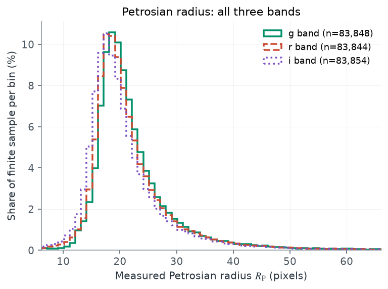
(a) Petrosian radius R_P in pixels, robust display window
Full finite range (1 panels)
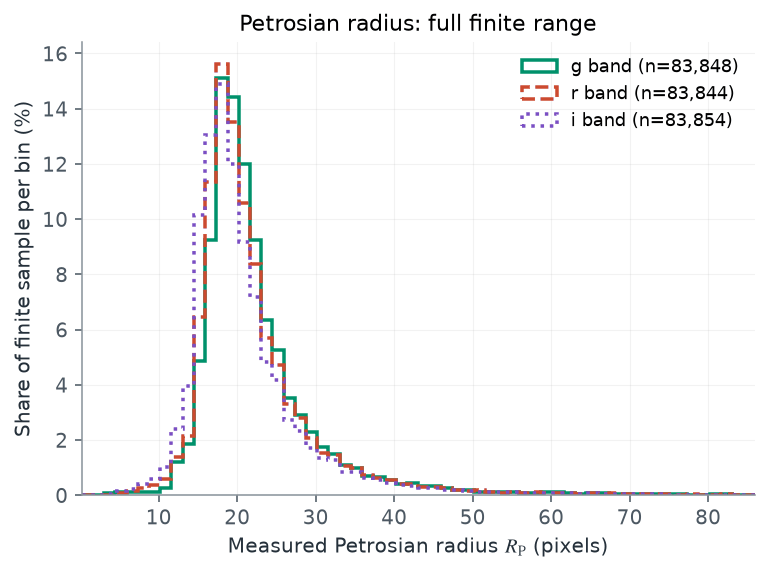
(b) R_P, full finite range
Why this figure. RP is the size scale on which C, A and S are measured. Knowing its typical value (in 0.263″ DES pixels) tells you how many pixels each measurement averages over, and therefore how much noise and blurring by the PSF can influence it.
What to look for. The median and spread per band; whether bands agree (the same galaxy should have a similar RP in all bands) and how many galaxies have a very small RP (few pixels, so measurements are more noise- and PSF-limited).
Data used. All 84,200 catalog galaxies per band; each curve uses only that band’s finite values (counts in the legend). Missing cutouts and flagged measurements are excluded, not set to zero. The full finite range is in panel (b).
Display windows and off-screen counts for every panel
| panel | series | band | axis | finite | lower | upper | below | above | shown |
|---|---|---|---|---|---|---|---|---|---|
| rpetro_dist | Petrosian radius R_P | g | x | 83848 | 6.1342 | 66.088 | 187 | 366 | 83295 |
| rpetro_dist | Petrosian radius R_P | r | x | 83844 | 6.1342 | 66.088 | 121 | 354 | 83369 |
| rpetro_dist | Petrosian radius R_P | i | x | 83854 | 6.1342 | 66.088 | 193 | 317 | 83344 |
| rpetro_dist_full | Petrosian radius R_P | g | x | 83848 | 0.19741 | 85.908 | 0 | 0 | 83848 |
| rpetro_dist_full | Petrosian radius R_P | r | x | 83844 | 0.19741 | 85.908 | 0 | 0 | 83844 |
| rpetro_dist_full | Petrosian radius R_P | i | x | 83854 | 0.19741 | 85.908 | 0 | 0 | 83854 |
Figure 2. Petrosian radius versus GALFIT effective radius, per band
Why this figure. A reader might expect the two “sizes” to be the same thing. They are not: RP is defined from the observed light profile, Re from a fitted model that encloses half of the model light. For a pure exponential (Sérsic n=1) profile, RP at η=0.2 is roughly twice Re [7].
What to look for. Whether points follow a tight line (a fixed ratio) or scatter widely, and the dashed equality line, which shows that RP is systematically larger than Re. The Spearman ρ in each title measures how well the ranking of galaxies by one radius agrees with the other. Note also the sparse population to the right of the main ridge, with large fitted Re but ordinary RP; these fits deserve visual inspection before their Re is trusted.
Data used. Main unflagged GALFIT cohort; both radii in pixels. Each panel is one band.
Display windows and off-screen counts for every panel
| panel | series | band | axis | finite | lower | upper | below | above | shown |
|---|---|---|---|---|---|---|---|---|---|
| rpetro_vs_re_g | GALFIT effective radius R_e (pixels) | g | x | 83722 | 4.0266 | 61.587 | 105 | 438 | 83179 |
| rpetro_vs_re_g | Petrosian radius R_P | g | y | 83722 | 6.2355 | 66.021 | 184 | 364 | 83174 |
| rpetro_vs_re_r | GALFIT effective radius R_e (pixels) | r | x | 83737 | 4.0266 | 61.587 | 99 | 309 | 83329 |
| rpetro_vs_re_r | Petrosian radius R_P | r | y | 83737 | 6.2355 | 66.021 | 119 | 356 | 83262 |
| rpetro_vs_re_i | GALFIT effective radius R_e (pixels) | i | x | 83783 | 4.0266 | 61.587 | 202 | 289 | 83292 |
| rpetro_vs_re_i | Petrosian radius R_P | i | y | 83783 | 6.2355 | 66.021 | 201 | 320 | 83262 |
4. Concentration (C) C Concentration
Concentration asks: how strongly is the light piled up toward the centre? C=5 log10(r80/r20), the ratio of the radii that enclose 80% and 20% of the light inside the aperture [8, 9, 1]. A flat, diffuse disc has C≈2.5–3; a bright nucleus or bulge pushes C upward. This section shows the C distribution (Figure 3), how C relates to fitted galaxy structure (Figure 4), and how it compares with human and machine classifications (Figure 5–Figure 9).
4.1 How concentrated are these galaxies?
The median C is 2.48 (16th–84th percentile 2.27 to 2.72) in g, 2.57 (16th–84th percentile 2.35 to 2.81) in r and 2.61 (16th–84th percentile 2.37 to 2.86) in i (Figure 3). These values sit at the diffuse end of the range found for bright nearby galaxies [9, 1], as expected for a catalog dominated by low-surface-brightness candidates. For the same galaxies, C is slightly lower in g than in r and i: the matched median difference is -0.097 (g−r) and -0.134 (g−i). Redder light being more centrally concentrated is one possible explanation; band-dependent noise, PSF size and aperture also contribute and are not separated here.
Figure 3. Distribution of concentration C in g, r and i
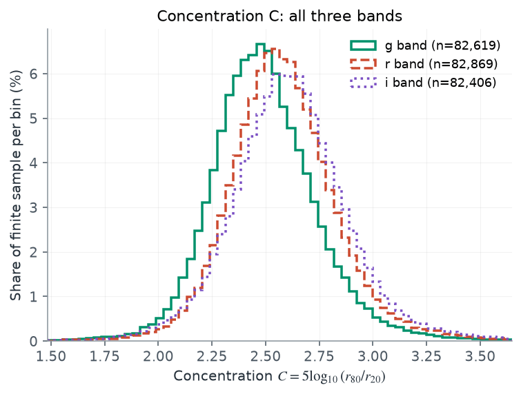
(a) Concentration C, robust display window
Full finite range including outliers (1 panels)
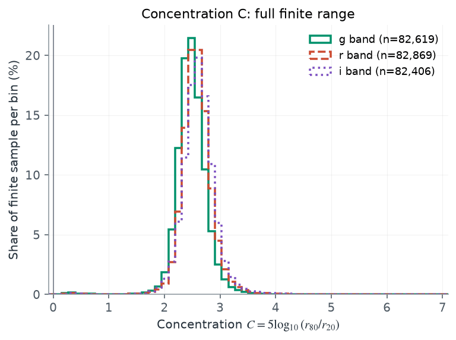
(b) Concentration C, full finite range
Why this figure. This is the basic picture of the C values in the catalog and the reference against which all later C plots should be read.
What to look for. Where the peak lies, how wide the distribution is, and whether the three band curves are shifted relative to each other. The curves show the percentage of each band’s finite sample per bin; tails outside the window are listed in the audit table and shown in panel (b).
Data used. All 84,200 catalog galaxies per band; each curve uses only that band’s finite values (counts in the legend). Missing cutouts and flagged measurements are excluded, not set to zero.
Display windows and off-screen counts for every panel
| panel | series | band | axis | finite | lower | upper | below | above | shown |
|---|---|---|---|---|---|---|---|---|---|
| C_dist | Concentration C | g | x | 82619 | 1.4835 | 3.6469 | 493 | 159 | 81967 |
| C_dist | Concentration C | r | x | 82869 | 1.4835 | 3.6469 | 376 | 349 | 82144 |
| C_dist | Concentration C | i | x | 82406 | 1.4835 | 3.6469 | 296 | 494 | 81616 |
| C_dist_full | Concentration C | g | x | 82619 | -0.083577 | 7.0974 | 0 | 0 | 82619 |
| C_dist_full | Concentration C | r | x | 82869 | -0.083577 | 7.0974 | 0 | 0 | 82869 |
| C_dist_full | Concentration C | i | x | 82406 | -0.083577 | 7.0974 | 0 | 0 | 82406 |
4.2 Concentration and fitted structure (GALFIT)
An independent description of each galaxy’s light profile comes from the GALFIT single-Sérsic fit. The most direct check of C is the Sérsic index n, which also measures how peaked a profile is. C rises with n in every band (Spearman ρ = 0.61/0.73/0.74 for g/r/i; Figure 4a), so the non-parametric C and the model-based n tell a consistent story. The relations with effective radius (ρ = 0.30/0.22/0.06; Figure 4c) and mean surface brightness (ρ = 0.06/-0.05/-0.22; Figure 4b) are weaker and change with band. C is therefore much less sensitive to how faint a galaxy is than raw asymmetry (Figure 13) or Gini (Figure 33), whose surface-brightness correlations reach |ρ|≈0.7–0.9.
Figure 4. Concentration C against six GALFIT properties
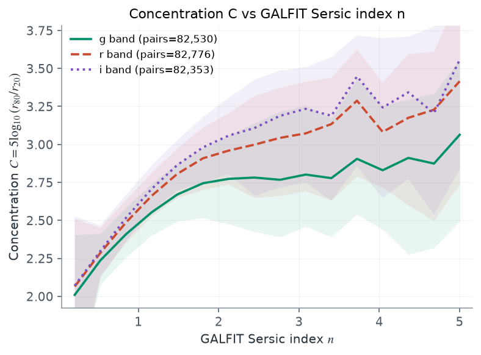
(a) Concentration C against GALFIT Sersic index n
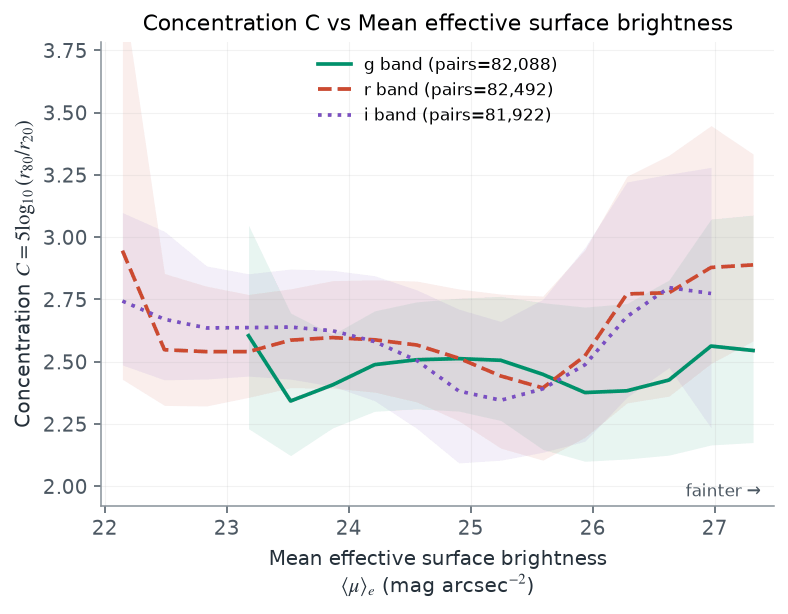
(b) Concentration C against Mean effective surface brightness
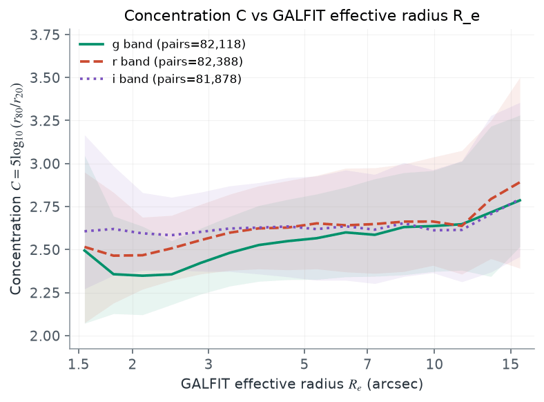
(c) Concentration C against GALFIT effective radius R_e
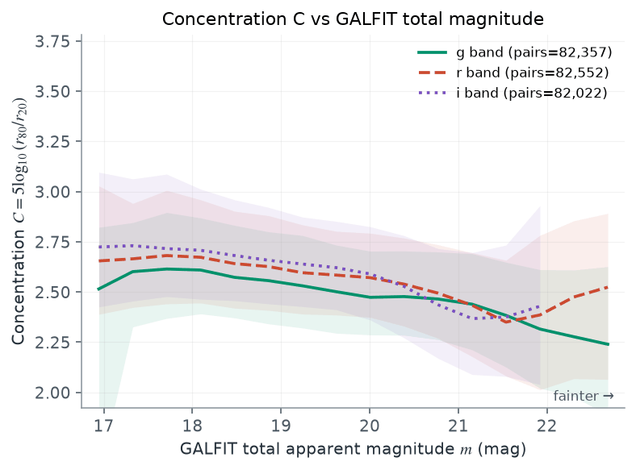
(d) Concentration C against GALFIT total magnitude
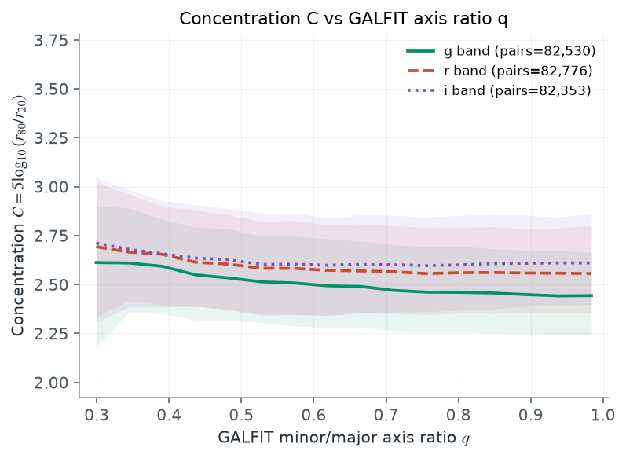
(e) Concentration C against GALFIT axis ratio q
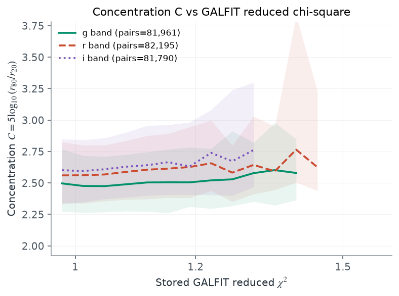
(f) Concentration C against GALFIT reduced chi-square
Why this figure. C and the GALFIT parameters describe the same images in different ways. Agreement with the Sérsic index supports C as a measure of light concentration, and trends with brightness or size reveal measurement sensitivities.
What to look for. Panel (a) is the key comparison: a rising line means galaxies with more peaked fitted profiles also have higher C. In (b) and (d) a flat line means C does not depend on how faint the galaxy is. In (c) a trend with size can reveal the influence of resolution, because small galaxies are more affected by blurring. Panels (e) and (f) are checks on shape and fit quality. Line style also distinguishes the bands: g solid, r dashed, i dotted.
Data used. The main “unflagged” GALFIT cohort (successful single-Sérsic fit, finite physical parameters, no parameter warning): 83,941/83,958/83,951 galaxies in g/r/i. Lines are medians in 16 common x bins, shading the 16th–84th percentile spread of galaxies (not an error bar); bins with fewer than 30 pairs are blank. Numbers come unchanged from paper_v2_data/galfit_binned_trends.csv.
4.3 Concentration and human / DECaLS10 classifications
Human volunteers answered morphology, nucleus and fitting questions; the DECaLS10 Zoobot model assigns ten class probabilities [23, 24, 25]. A clear C association is with the human visible-nucleus answer: ρ=0.254 in r (Figure 6, Figure 8a), and galaxies with a consensus visible nucleus have higher C than the rest (rank-biserial +0.248 in r; Figure 7). By contrast, the human ETG fraction has only ρ=0.076 with C. The four human morphology consensus classes overlap strongly in C (Figure 5), so C alone cannot reproduce these labels. The strongest r-band associations overall are Human: Visible nucleus: yes (ρ=+0.25), Human: Featureless (ρ=-0.19).
Figure 5. Concentration C for each human morphology consensus class
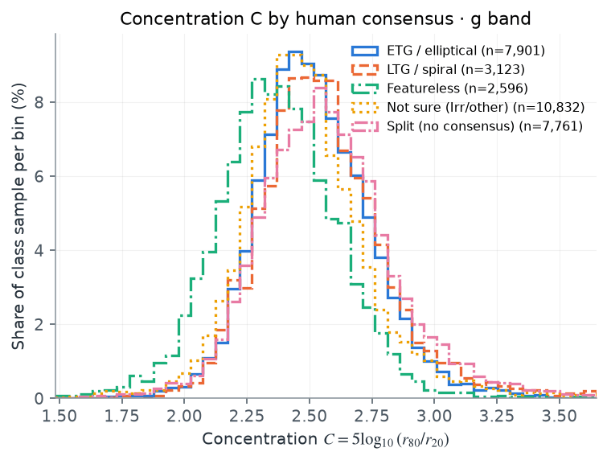
(a) Concentration C, g band
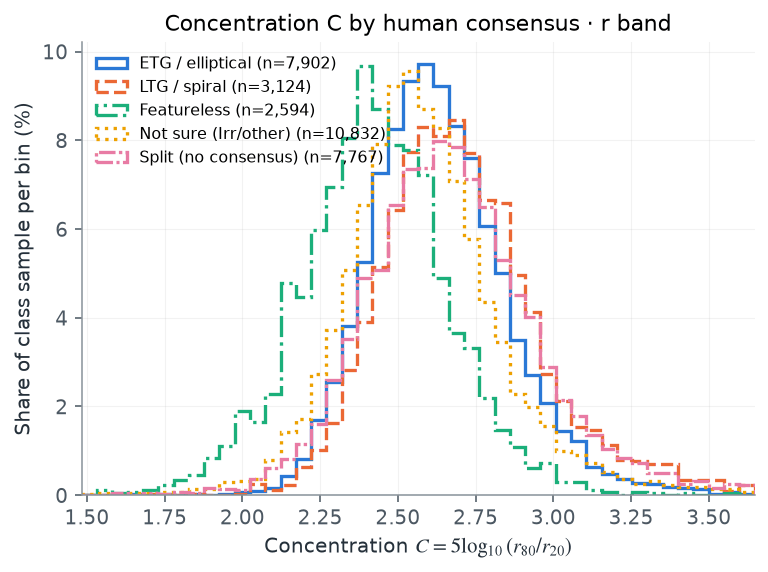
(b) Concentration C, r band
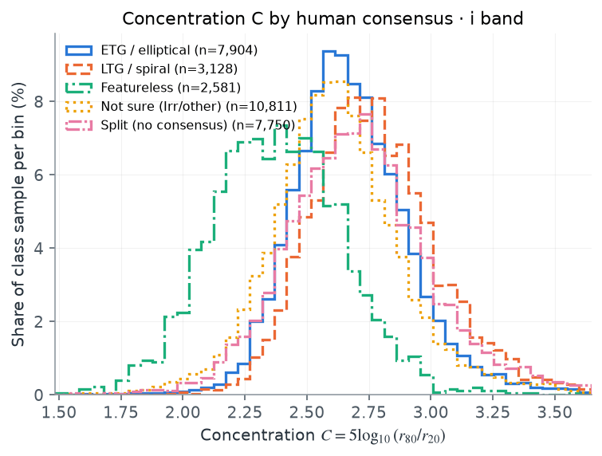
(c) Concentration C, i band
Why this figure. If human classes such as ETG (elliptical-like) or Featureless correspond to different light concentrations, their C distributions should be shifted relative to each other.
What to look for. Horizontal shifts between curves (different typical C) and how much they overlap. Strong overlap means C cannot separate these classes by itself. Panels (a)–(c) show the g, r and i bands.
Data used. Galaxies with at least two human morphology answers, split by the published seniority-weighted consensus (ETG, LTG, Featureless, Not sure) or no consensus (“split”). Each curve is normalised to its own class size, so shapes compare even though class sizes differ. Display window: pooled g/r/i 0.5–99.5 percentiles with 3.5% padding.
Display windows and off-screen counts for every panel
| panel | series | band | axis | finite | lower | upper | below | above | shown |
|---|---|---|---|---|---|---|---|---|---|
| C__human_g | Concentration C | ETG / elliptical | g | x | 7901 | 1.4835 | 3.6469 | 50 | 19 | 7832 |
| C__human_g | Concentration C | LTG / spiral | g | x | 3123 | 1.4835 | 3.6469 | 20 | 21 | 3082 |
| C__human_g | Concentration C | Featureless | g | x | 2596 | 1.4835 | 3.6469 | 4 | 1 | 2591 |
| C__human_g | Concentration C | Not sure (Irr/other) | g | x | 10832 | 1.4835 | 3.6469 | 56 | 38 | 10738 |
| C__human_g | Concentration C | Split (no consensus) | g | x | 7761 | 1.4835 | 3.6469 | 33 | 33 | 7695 |
| C__human_r | Concentration C | ETG / elliptical | r | x | 7902 | 1.4835 | 3.6469 | 26 | 24 | 7852 |
| C__human_r | Concentration C | LTG / spiral | r | x | 3124 | 1.4835 | 3.6469 | 10 | 44 | 3070 |
| C__human_r | Concentration C | Featureless | r | x | 2594 | 1.4835 | 3.6469 | 6 | 3 | 2585 |
| C__human_r | Concentration C | Not sure (Irr/other) | r | x | 10832 | 1.4835 | 3.6469 | 44 | 91 | 10697 |
| C__human_r | Concentration C | Split (no consensus) | r | x | 7767 | 1.4835 | 3.6469 | 21 | 75 | 7671 |
| C__human_i | Concentration C | ETG / elliptical | i | x | 7904 | 1.4835 | 3.6469 | 18 | 45 | 7841 |
| C__human_i | Concentration C | LTG / spiral | i | x | 3128 | 1.4835 | 3.6469 | 7 | 74 | 3047 |
| C__human_i | Concentration C | Featureless | i | x | 2581 | 1.4835 | 3.6469 | 9 | 1 | 2571 |
| C__human_i | Concentration C | Not sure (Irr/other) | i | x | 10811 | 1.4835 | 3.6469 | 46 | 98 | 10667 |
| C__human_i | Concentration C | Split (no consensus) | i | x | 7750 | 1.4835 | 3.6469 | 16 | 112 | 7622 |
Figure 6. Concentration C: rank correlations with every human answer and DECaLS10 class
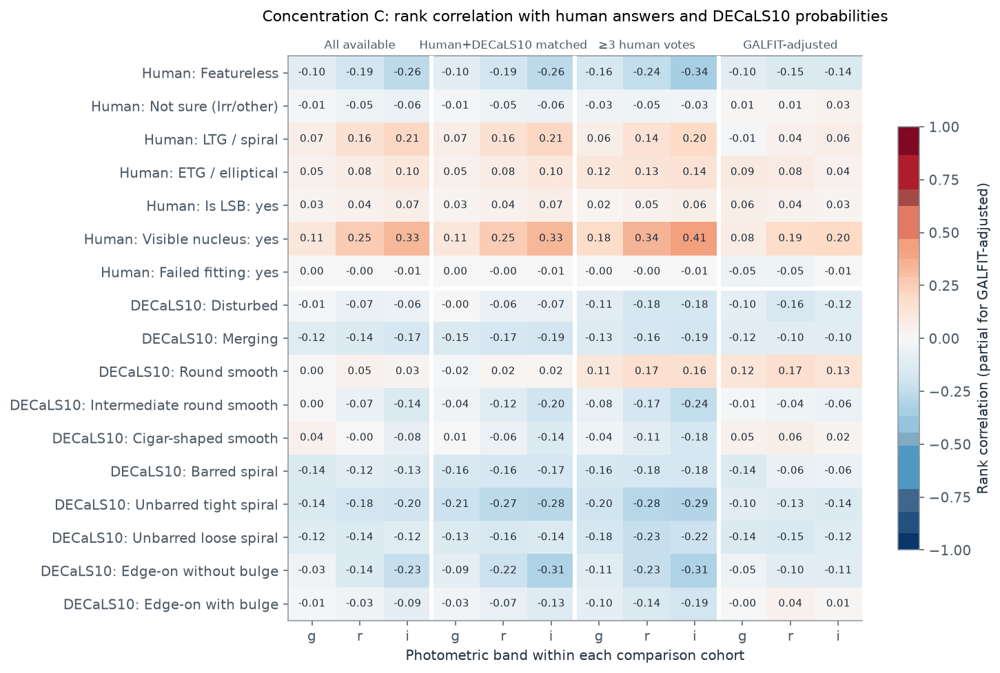
(a) Concentration C: all targets, bands and cohorts
Why this figure. This single table-like heatmap summarises every association between C and the 17 external labels, in all three bands and four comparison cohorts, so that a pattern can be checked for consistency at a glance.
What to look for. Red cells mean higher C goes with a larger answer fraction/probability; blue the opposite; white means no monotonic association. Read along a row: if the colour stays the same across bands and cohorts, the association is robust to band choice and sample selection. The rightmost block shows what remains after controlling for brightness, size and shape.
Data used. All rank correlations from paper_v3_data/associations.csv. Human values are raw answer fractions (only galaxies with ≥2 answers to that question; 32,288 for morphology); DECaLS10 values are model probabilities (84,104 valid vectors). Four cohorts: all available pairs; galaxies with both ≥2 human votes and DECaLS10; ≥3 human votes; and the GALFIT-unflagged cohort after removing the rank-linear part explained by mean surface brightness, effective radius and axis ratio (partial rank correlation).
Figure 7. Concentration C: how well each class separates from all other galaxies
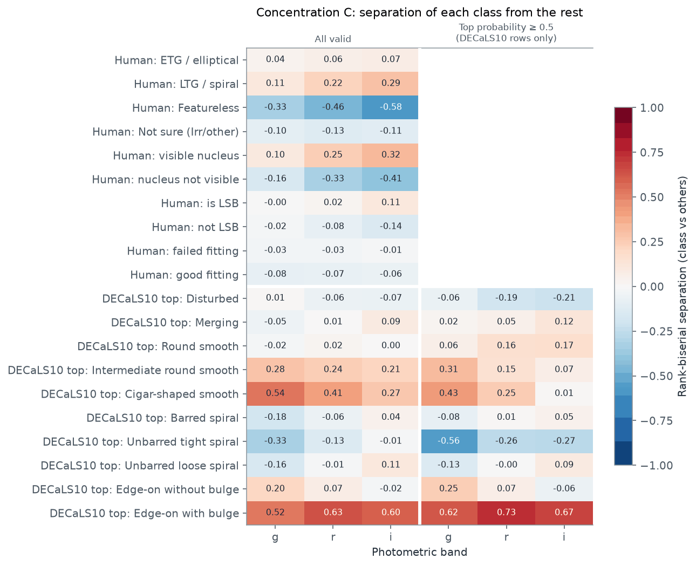
(a) Concentration C: class separation
Why this figure. Correlations use continuous fractions; this figure asks the complementary question for hard class labels: does a randomly chosen class member tend to have a higher C than a randomly chosen non-member?
What to look for. Values near +1 or −1 mean almost complete separation; near 0 means none. Compare the human nucleus rows with the morphology rows, and the DECaLS10 rows with and without the ≥0.5 confidence cut.
Data used. Rank-biserial separations from paper_v3_data/class_effects.csv. Human rows use published consensus memberships among galaxies with ≥2 comparable answers; DECaLS10 rows use the class with the largest model probability. The right-hand block repeats DECaLS10 rows only for galaxies whose largest probability is at least 0.5 (human rows are blank there by design).
Figure 8. Concentration C along human answer fractions and DECaLS10 probabilities
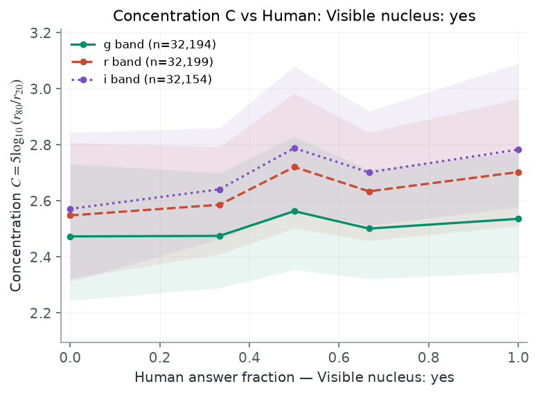
(a) Concentration C against Human: Visible nucleus: yes
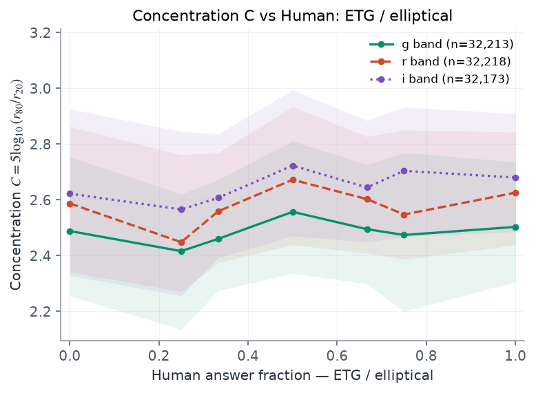
(b) Concentration C against Human: ETG / elliptical
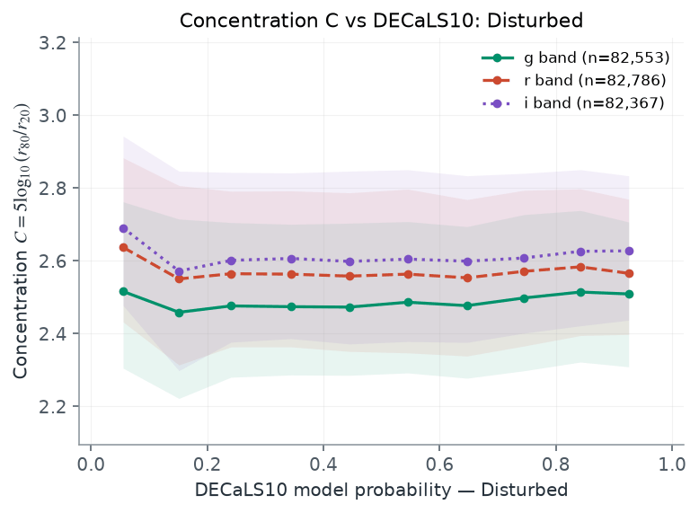
(c) Concentration C against DECaLS10: Disturbed
All other human answers and DECaLS10 classes (14 panels)
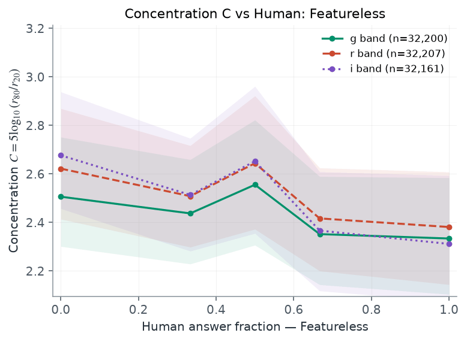
(d) Concentration C against Human: Featureless
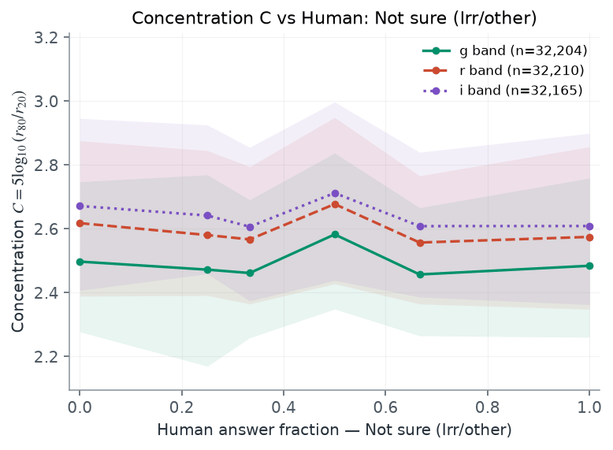
(e) Concentration C against Human: Not sure (Irr/other)
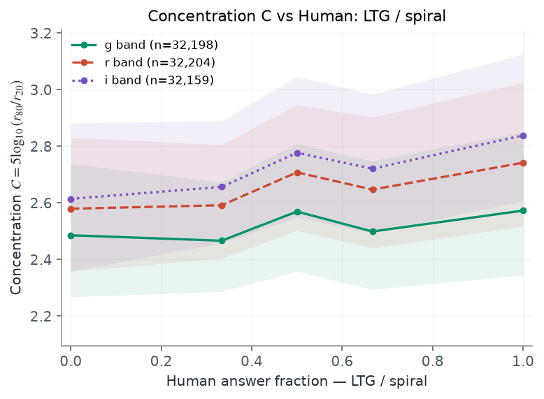
(f) Concentration C against Human: LTG / spiral
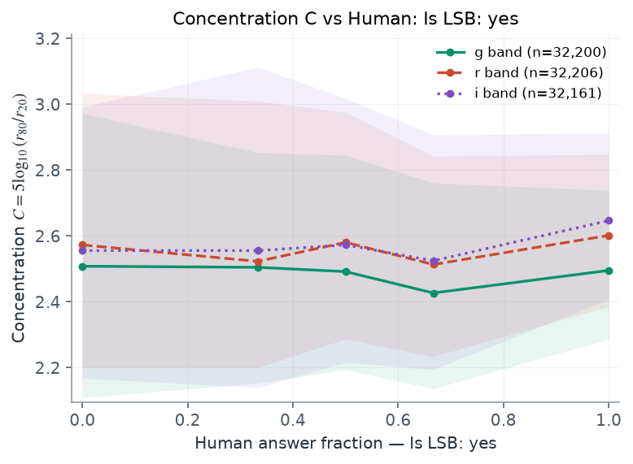
(g) Concentration C against Human: Is LSB: yes
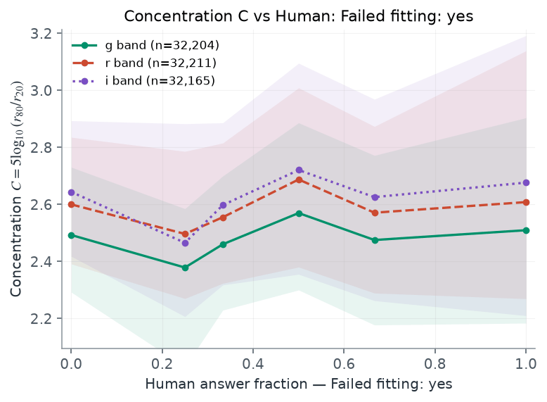
(h) Concentration C against Human: Failed fitting: yes
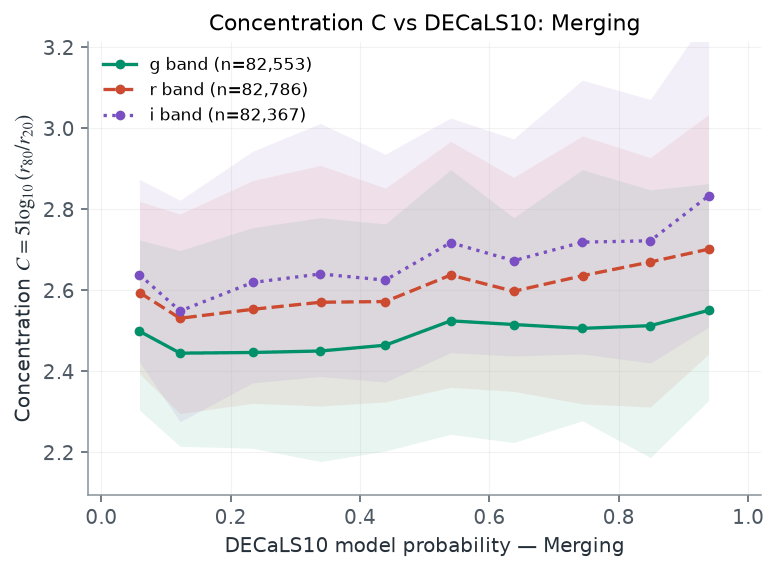
(i) Concentration C against DECaLS10: Merging
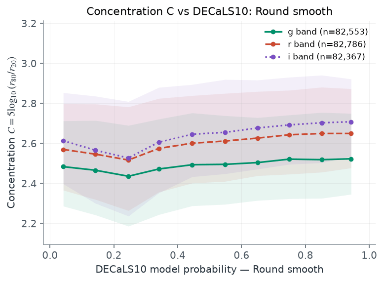
(j) Concentration C against DECaLS10: Round smooth
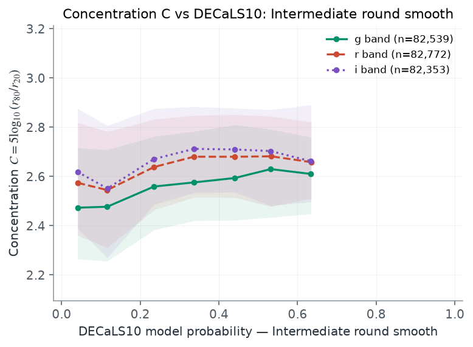
(k) Concentration C against DECaLS10: Intermediate round smooth
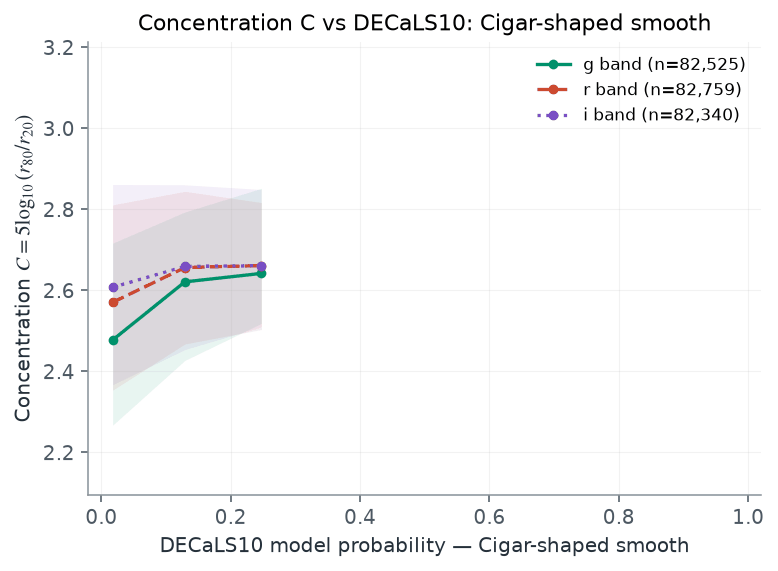
(l) Concentration C against DECaLS10: Cigar-shaped smooth
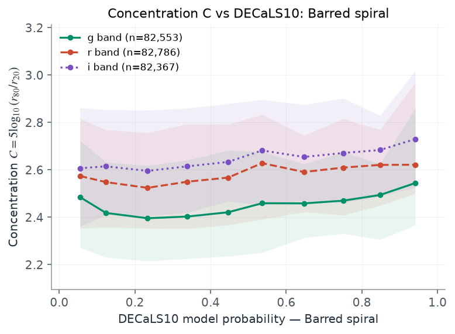
(m) Concentration C against DECaLS10: Barred spiral
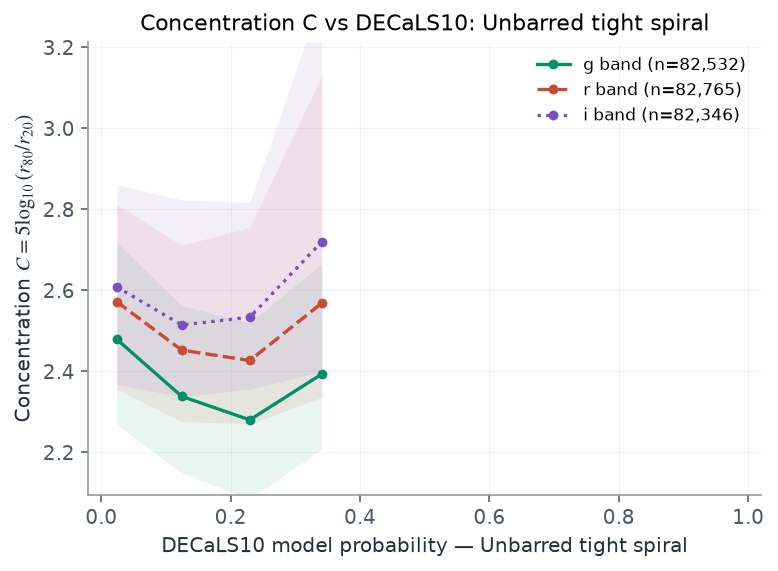
(n) Concentration C against DECaLS10: Unbarred tight spiral
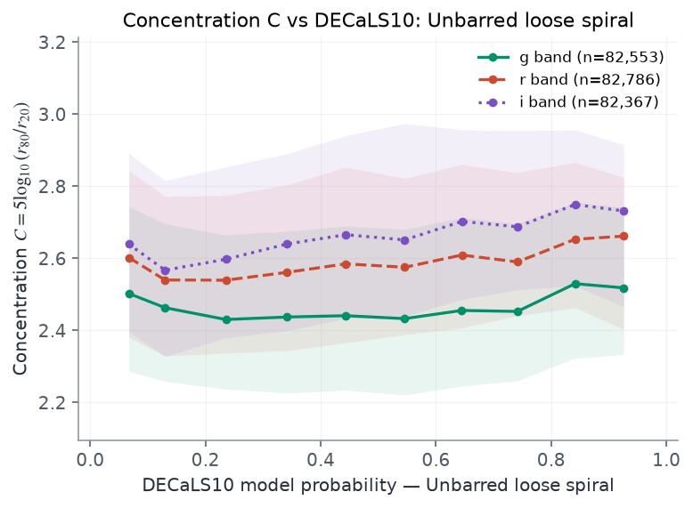
(o) Concentration C against DECaLS10: Unbarred loose spiral
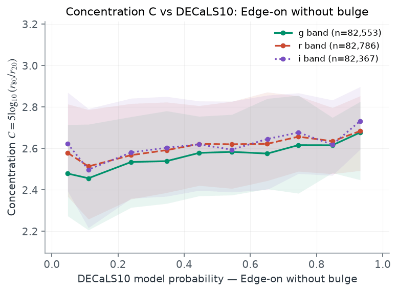
(p) Concentration C against DECaLS10: Edge-on without bulge
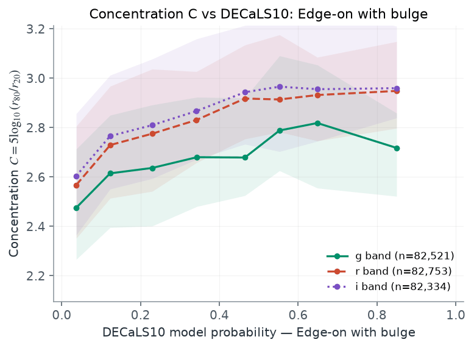
(q) Concentration C against DECaLS10: Edge-on with bulge
Why this figure. Heatmaps reduce each relation to one number. These trend lines show the shape of the three most informative relations: visible nucleus, ETG answer and DECaLS10 Disturbed probability.
What to look for. Whether the median C climbs steadily, saturates or does nothing as the fraction or probability rises, and how wide the spread remains. Human fractions take only a few discrete values (e.g. 0, ½, 1 for two votes). The other 14 targets are in the expandable block.
Data used. Galaxies with a valid human fraction (≥2 answers) or DECaLS10 probability, binned in steps of 0.1. Points are bin medians, shading the 16th–84th percentile spread; bins with fewer than 20 galaxies are omitted. Numbers come unchanged from paper_v3_data/probability_trends.csv.
Figure 9. Concentration C across a saved clustering map
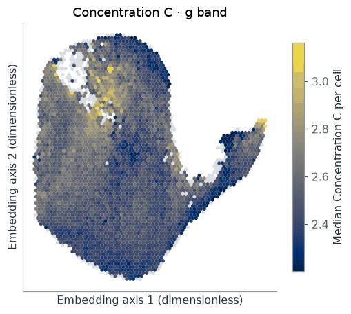
(a) Concentration C, g band (59,653 finite of 59,780)
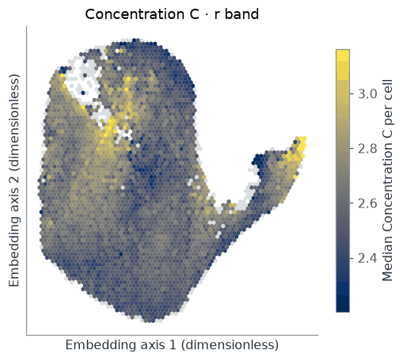
(b) Concentration C, r band (59,660 finite of 59,780)
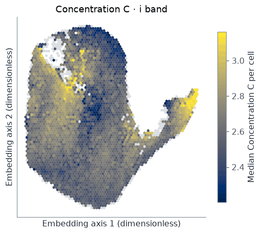
(c) Concentration C, i band (59,610 finite of 59,780)
Why this figure. The clustering project placed galaxies on 2-D maps (here a UMAP of GALFIT g+i properties). Colouring the map by C shows whether concentrated galaxies occupy a particular region, i.e. whether the clustering features already carry concentration information.
What to look for. Smooth colour gradients (C varies systematically across the map) versus a speckled pattern (unrelated). Axes have no physical units. Panels (a)–(c) show the g, r and i bands; other maps are in Section 9.
Data used. The 59,780 galaxies of the saved “loose selection” used by the clustering project (a subset of the catalog), placed at their saved coordinates in the GALFIT g+i fitted properties, UMAP (120 neighbours) map. Each hexagonal cell is coloured by the median value of its galaxies (at least 3 finite values); grey cells contain galaxies but too few finite values. The colour range spans the 1st–99th percentiles of these cell medians, pooled over all 63 saved maps and bands, so maps of the same metric share one scale; cells beyond it take the end colour (counts in the audit table). For clumpiness, the Conselice-like range is ten times the Lotz-like range.
Display windows and off-screen counts for every panel
| panel | series | band | axis | finite | lower | upper | below | above | shown |
|---|---|---|---|---|---|---|---|---|---|
| emb_57_C | Concentration C | g | colour (cell medians) | 3084 | 2.2032 | 3.1609 | 31 | 4 | 3049 |
| emb_58_C | Concentration C | r | colour (cell medians) | 3084 | 2.2032 | 3.1609 | 6 | 10 | 3068 |
| emb_59_C | Concentration C | i | colour (cell medians) | 3085 | 2.2032 | 3.1609 | 10 | 24 | 3051 |
5. Asymmetry (A) A Asymmetry
Asymmetry asks: does the galaxy look the same after rotating it by 180°? Araw is the summed absolute difference between the image and its rotated copy divided by the summed absolute light [10, 5]. Image noise is never symmetric, so even a perfectly symmetric galaxy has Araw>0. We therefore also estimate the same quantity on a blank sky patch, Asky, and keep Acorr=Araw−Asky [1]. Both raw and corrected values are always shown side by side: raw is the direct measurement, corrected is the noise-adjusted estimate, and neither is preferred here.
5.1 How large is the asymmetry, and how large is the noise term?
Median Araw is 0.606 (16th–84th percentile 0.421 to 0.842) in r (Figure 10a), but the median sky term is almost the same size, 0.637 (Figure 10c). As a result Acorr is negative for 71%/68%/78% of finite g/r/i measurements (Figure 10b). This is the central fact about asymmetry in this faint sample: most of the measured raw asymmetry is comparable to what noise alone produces. Negative corrected values are valid estimates (noise in the sky patch can exceed that in the galaxy) and are kept. Figure 11 overlays the two versions per band and Figure 12 shows them galaxy by galaxy: the rank agreement between raw and corrected is only ρ=-0.26/-0.30/-0.30 (g/r/i), so the correction reorders galaxies substantially.
Figure 10. Distributions of raw asymmetry, sky-corrected asymmetry and the sky term
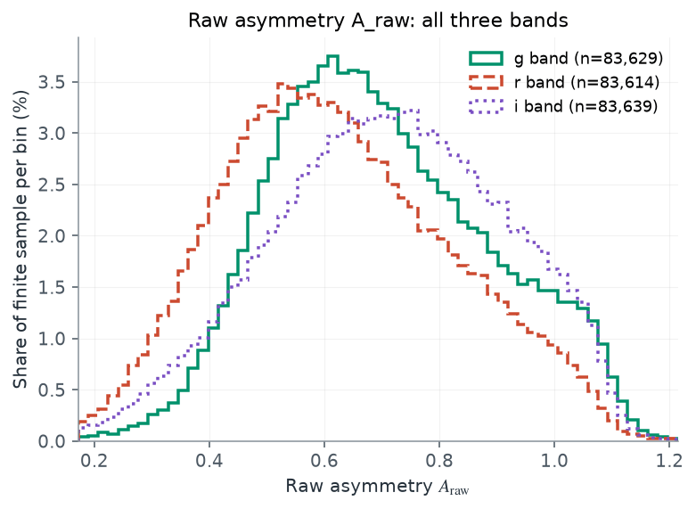
(a) Raw asymmetry A_raw
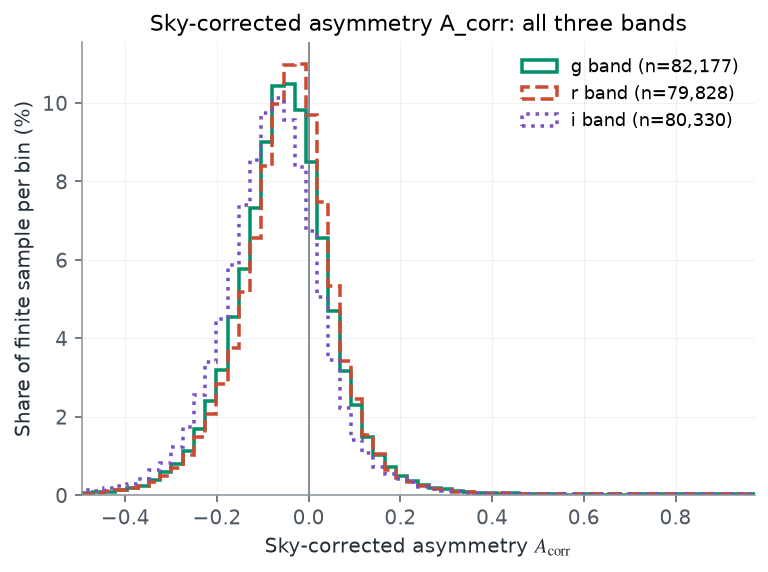
(b) Sky-corrected asymmetry A_corr
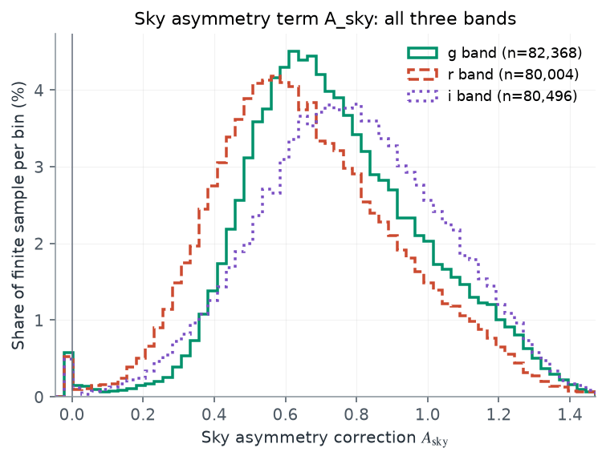
(c) Sky term A_sky
Full finite ranges including outliers (3 panels)
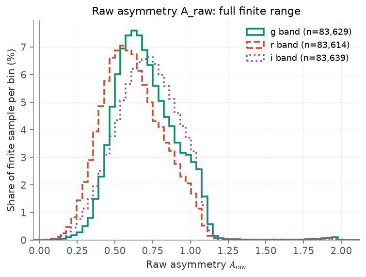
(d) A_raw, full range
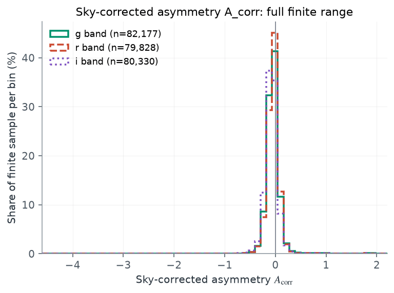
(e) A_corr, full range
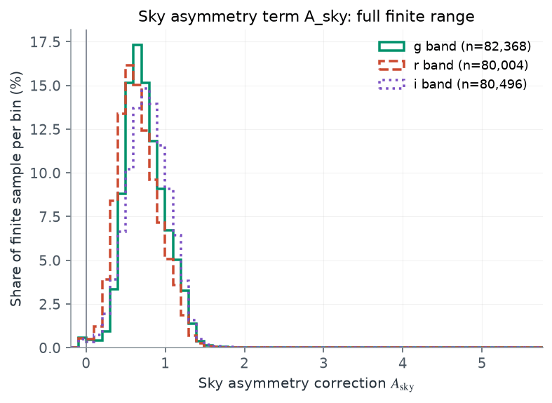
(f) A_sky, full range
Why this figure. Raw and corrected asymmetry can only be interpreted together with the size of the noise correction. These three panels show the three ingredients of Acorr=Araw−Asky.
What to look for. Compare the location of (a) and (c): when they are similar, the corrected values in (b) cluster near zero and many become negative (left of the grey zero line). Also compare the bands: the i band has a larger sky term.
Data used. All 84,200 catalog galaxies per band; each curve uses only that band’s finite values (counts in the legend). Missing cutouts and flagged measurements are excluded, not set to zero. Full finite ranges are in panels (d)–(f).
Display windows and off-screen counts for every panel
| panel | series | band | axis | finite | lower | upper | below | above | shown |
|---|---|---|---|---|---|---|---|---|---|
| A_raw_dist | Raw asymmetry A_raw | g | x | 83629 | 0.17206 | 1.2144 | 69 | 496 | 83064 |
| A_raw_dist | Raw asymmetry A_raw | r | x | 83614 | 0.17206 | 1.2144 | 314 | 357 | 82943 |
| A_raw_dist | Raw asymmetry A_raw | i | x | 83639 | 0.17206 | 1.2144 | 210 | 284 | 83145 |
| A_raw_dist_full | Raw asymmetry A_raw | g | x | 83629 | -0.041134 | 2.1205 | 0 | 0 | 83629 |
| A_raw_dist_full | Raw asymmetry A_raw | r | x | 83614 | -0.041134 | 2.1205 | 0 | 0 | 83614 |
| A_raw_dist_full | Raw asymmetry A_raw | i | x | 83639 | -0.041134 | 2.1205 | 0 | 0 | 83639 |
| A_corrected_dist | Sky-corrected asymmetry A_corr | g | x | 82177 | -0.49485 | 0.97224 | 197 | 494 | 81486 |
| A_corrected_dist | Sky-corrected asymmetry A_corr | r | x | 79828 | -0.49485 | 0.97224 | 235 | 325 | 79268 |
| A_corrected_dist | Sky-corrected asymmetry A_corr | i | x | 80330 | -0.49485 | 0.97224 | 396 | 291 | 79643 |
| A_corrected_dist_full | Sky-corrected asymmetry A_corr | g | x | 82177 | -4.6061 | 2.203 | 0 | 0 | 82177 |
| A_corrected_dist_full | Sky-corrected asymmetry A_corr | r | x | 79828 | -4.6061 | 2.203 | 0 | 0 | 79828 |
| A_corrected_dist_full | Sky-corrected asymmetry A_corr | i | x | 80330 | -4.6061 | 2.203 | 0 | 0 | 80330 |
| A_sky_dist | Sky asymmetry term A_sky | g | x | 82368 | -0.046952 | 1.4709 | 0 | 253 | 82115 |
| A_sky_dist | Sky asymmetry term A_sky | r | x | 80004 | -0.046952 | 1.4709 | 0 | 174 | 79830 |
| A_sky_dist | Sky asymmetry term A_sky | i | x | 80496 | -0.046952 | 1.4709 | 0 | 369 | 80127 |
| A_sky_dist_full | Sky asymmetry term A_sky | g | x | 82368 | -0.19492 | 5.7641 | 0 | 0 | 82368 |
| A_sky_dist_full | Sky asymmetry term A_sky | r | x | 80004 | -0.19492 | 5.7641 | 0 | 0 | 80004 |
| A_sky_dist_full | Sky asymmetry term A_sky | i | x | 80496 | -0.19492 | 5.7641 | 0 | 0 | 80496 |
Figure 11. Raw and sky-corrected asymmetry on a common axis, one band per panel
Why this figure. Placing raw and corrected asymmetry on the same axis shows directly how far the noise correction moves the whole distribution.
What to look for. The horizontal shift between the solid blue (raw) and dashed orange (corrected) curves, and the fraction of the orange curve left of zero. These are distribution comparisons; the galaxy-by-galaxy pairing is shown in Figure 12.
Data used. All 84,200 catalog galaxies per band; each curve uses only that band’s finite values (counts in the legend). Missing cutouts and flagged measurements are excluded, not set to zero. Each curve uses its own finite sample (counts can differ, because the corrected value also needs a clean sky patch).
Display windows and off-screen counts for every panel
| panel | series | band | axis | finite | lower | upper | below | above | shown |
|---|---|---|---|---|---|---|---|---|---|
| A_overlay_g | Raw asymmetry A_raw | g | x | 83629 | -0.42587 | 1.1931 | 0 | 524 | 83105 |
| A_overlay_g | Sky-corrected asymmetry A_corr | g | x | 82177 | -0.42587 | 1.1931 | 383 | 380 | 81414 |
| A_overlay_r | Raw asymmetry A_raw | r | x | 83614 | -0.42587 | 1.1931 | 0 | 382 | 83232 |
| A_overlay_r | Sky-corrected asymmetry A_corr | r | x | 79828 | -0.42587 | 1.1931 | 396 | 257 | 79175 |
| A_overlay_i | Raw asymmetry A_raw | i | x | 83639 | -0.42587 | 1.1931 | 0 | 301 | 83338 |
| A_overlay_i | Sky-corrected asymmetry A_corr | i | x | 80330 | -0.42587 | 1.1931 | 704 | 199 | 79427 |
Figure 12. Raw versus sky-corrected asymmetry for the same galaxies
Why this figure. If the sky correction were a constant offset, galaxies would lie on a narrow band parallel to the equality line, and their ranking would be unchanged. This figure tests that.
What to look for. The width of the cloud and the Spearman ρ in each title. A wide cloud and a moderate ρ mean the correction differs strongly from galaxy to galaxy, so conclusions can depend on which version is used.
Data used. Galaxies with both values finite in that band. Colour shows the number of galaxies per hexagonal cell on a logarithmic scale.
Display windows and off-screen counts for every panel
| panel | series | band | axis | finite | lower | upper | below | above | shown |
|---|---|---|---|---|---|---|---|---|---|
| A_paired_g | Raw asymmetry A_raw | g | x | 82177 | 0.17206 | 1.2144 | 68 | 489 | 81620 |
| A_paired_g | Sky-corrected asymmetry A_corr | g | y | 82177 | -0.49485 | 0.97224 | 197 | 494 | 81486 |
| A_paired_r | Raw asymmetry A_raw | r | x | 79828 | 0.17206 | 1.2144 | 291 | 343 | 79194 |
| A_paired_r | Sky-corrected asymmetry A_corr | r | y | 79828 | -0.49485 | 0.97224 | 235 | 325 | 79268 |
| A_paired_i | Raw asymmetry A_raw | i | x | 80330 | 0.17206 | 1.2144 | 196 | 272 | 79862 |
| A_paired_i | Sky-corrected asymmetry A_corr | i | y | 80330 | -0.49485 | 0.97224 | 396 | 291 | 79643 |
5.2 Asymmetry and fitted structure (GALFIT)
The most important relation is with mean effective surface brightness (Figure 13b). Araw rises steeply toward fainter galaxies (ρ = 0.72/0.75/0.78 for g/r/i), exactly what is expected if noise dominates the raw value: fainter galaxies have less signal relative to the same sky noise. After the sky correction the trend reverses (ρ = -0.41/-0.44/-0.42; Figure 13h), so the correction more than removes the faint-galaxy rise. This is consistent with substantial noise sensitivity of both versions and does not establish a physical link between asymmetry and surface brightness [11].
Figure 13. Raw and sky-corrected asymmetry against six GALFIT properties
Raw asymmetry A_raw
Sky-corrected asymmetry A_corr
Why this figure. Shows whether asymmetry tracks galaxy structure (Sérsic index, size) or mainly brightness, which would indicate noise sensitivity. Raw and corrected use the same panel order, so each raw panel sits directly above its corrected counterpart on wide screens.
What to look for. Panels (a)–(f) show Araw, (g)–(l) Acorr, against the same six properties in the same order. Pay most attention to surface brightness (b vs h) and magnitude (d vs j): strong opposite trends there indicate that noise, not intrinsic asymmetry, drives much of the signal.
Data used. The main “unflagged” GALFIT cohort (successful single-Sérsic fit, finite physical parameters, no parameter warning): 83,941/83,958/83,951 galaxies in g/r/i. Lines are medians in 16 common x bins, shading the 16th–84th percentile spread of galaxies (not an error bar); bins with fewer than 30 pairs are blank. Numbers come unchanged from paper_v2_data/galfit_binned_trends.csv.
5.3 Asymmetry and human / DECaLS10 classifications
Asymmetry is the CAS index meant to trace disturbed or merging systems. In r, Araw correlates with the DECaLS10 Disturbed probability with ρ=-0.055, whereas Acorr gives ρ=0.146 (Figure 15). The strongest r-band associations are DECaLS10: Edge-on without bulge (ρ=+0.49), Human: Featureless (ρ=+0.40) for raw and DECaLS10: Edge-on without bulge (ρ=-0.32), DECaLS10: Cigar-shaped smooth (ρ=-0.28) for corrected asymmetry. The human class distributions (Figure 14), class separations (Figure 16) and trend lines (Figure 17) should be read with the noise dominance of Figure 10 in mind: a class that is on average fainter will look more asymmetric in Araw for that reason alone. The GALFIT-adjusted cohort in Figure 15 partially removes this effect.
Figure 14. Raw and sky-corrected asymmetry for each human morphology consensus class
g and i bands (4 panels)
Why this figure. Tests whether galaxies that humans call irregular/unsure or LTG (spiral) appear more asymmetric than ETG or Featureless galaxies, as would be expected if A traced visible irregularity.
What to look for. Shifts between class curves in (a) raw and (b) corrected asymmetry. A shift present in raw but absent in corrected suggests a brightness/noise origin. g and i bands are in the expandable block.
Data used. Galaxies with at least two human morphology answers, split by the published seniority-weighted consensus (ETG, LTG, Featureless, Not sure) or no consensus (“split”). Each curve is normalised to its own class size, so shapes compare even though class sizes differ. Display window: pooled g/r/i 0.5–99.5 percentiles with 3.5% padding.
Display windows and off-screen counts for every panel
| panel | series | band | axis | finite | lower | upper | below | above | shown |
|---|---|---|---|---|---|---|---|---|---|
| A_raw__human_r | Raw asymmetry A_raw | ETG / elliptical | r | x | 7901 | 0.17206 | 1.2144 | 42 | 26 | 7833 |
| A_raw__human_r | Raw asymmetry A_raw | LTG / spiral | r | x | 3124 | 0.17206 | 1.2144 | 12 | 9 | 3103 |
| A_raw__human_r | Raw asymmetry A_raw | Featureless | r | x | 2593 | 0.17206 | 1.2144 | 1 | 3 | 2589 |
| A_raw__human_r | Raw asymmetry A_raw | Not sure (Irr/other) | r | x | 10832 | 0.17206 | 1.2144 | 34 | 45 | 10753 |
| A_raw__human_r | Raw asymmetry A_raw | Split (no consensus) | r | x | 7767 | 0.17206 | 1.2144 | 45 | 20 | 7702 |
| A_corrected__human_r | Sky-corrected asymmetry A_corr | ETG / elliptical | r | x | 7547 | -0.49485 | 0.97224 | 18 | 25 | 7504 |
| A_corrected__human_r | Sky-corrected asymmetry A_corr | LTG / spiral | r | x | 2964 | -0.49485 | 0.97224 | 0 | 8 | 2956 |
| A_corrected__human_r | Sky-corrected asymmetry A_corr | Featureless | r | x | 2474 | -0.49485 | 0.97224 | 27 | 5 | 2442 |
| A_corrected__human_r | Sky-corrected asymmetry A_corr | Not sure (Irr/other) | r | x | 10360 | -0.49485 | 0.97224 | 31 | 35 | 10294 |
| A_corrected__human_r | Sky-corrected asymmetry A_corr | Split (no consensus) | r | x | 7394 | -0.49485 | 0.97224 | 19 | 17 | 7358 |
| A_raw__human_g | Raw asymmetry A_raw | ETG / elliptical | g | x | 7902 | 0.17206 | 1.2144 | 3 | 47 | 7852 |
| A_raw__human_g | Raw asymmetry A_raw | LTG / spiral | g | x | 3125 | 0.17206 | 1.2144 | 4 | 20 | 3101 |
| A_raw__human_g | Raw asymmetry A_raw | Featureless | g | x | 2596 | 0.17206 | 1.2144 | 0 | 4 | 2592 |
| A_raw__human_g | Raw asymmetry A_raw | Not sure (Irr/other) | g | x | 10835 | 0.17206 | 1.2144 | 5 | 55 | 10775 |
| A_raw__human_g | Raw asymmetry A_raw | Split (no consensus) | g | x | 7765 | 0.17206 | 1.2144 | 5 | 34 | 7726 |
| A_corrected__human_g | Sky-corrected asymmetry A_corr | ETG / elliptical | g | x | 7759 | -0.49485 | 0.97224 | 11 | 42 | 7706 |
| A_corrected__human_g | Sky-corrected asymmetry A_corr | LTG / spiral | g | x | 3067 | -0.49485 | 0.97224 | 0 | 18 | 3049 |
| A_corrected__human_g | Sky-corrected asymmetry A_corr | Featureless | g | x | 2562 | -0.49485 | 0.97224 | 19 | 4 | 2539 |
| A_corrected__human_g | Sky-corrected asymmetry A_corr | Not sure (Irr/other) | g | x | 10637 | -0.49485 | 0.97224 | 26 | 53 | 10558 |
| A_corrected__human_g | Sky-corrected asymmetry A_corr | Split (no consensus) | g | x | 7633 | -0.49485 | 0.97224 | 20 | 38 | 7575 |
| A_raw__human_i | Raw asymmetry A_raw | ETG / elliptical | i | x | 7909 | 0.17206 | 1.2144 | 28 | 16 | 7865 |
| A_raw__human_i | Raw asymmetry A_raw | LTG / spiral | i | x | 3128 | 0.17206 | 1.2144 | 20 | 6 | 3102 |
| A_raw__human_i | Raw asymmetry A_raw | Featureless | i | x | 2595 | 0.17206 | 1.2144 | 0 | 4 | 2591 |
| A_raw__human_i | Raw asymmetry A_raw | Not sure (Irr/other) | i | x | 10837 | 0.17206 | 1.2144 | 18 | 34 | 10785 |
| A_raw__human_i | Raw asymmetry A_raw | Split (no consensus) | i | x | 7765 | 0.17206 | 1.2144 | 35 | 15 | 7715 |
| A_corrected__human_i | Sky-corrected asymmetry A_corr | ETG / elliptical | i | x | 7589 | -0.49485 | 0.97224 | 26 | 17 | 7546 |
| A_corrected__human_i | Sky-corrected asymmetry A_corr | LTG / spiral | i | x | 2982 | -0.49485 | 0.97224 | 4 | 6 | 2972 |
| A_corrected__human_i | Sky-corrected asymmetry A_corr | Featureless | i | x | 2501 | -0.49485 | 0.97224 | 37 | 8 | 2456 |
| A_corrected__human_i | Sky-corrected asymmetry A_corr | Not sure (Irr/other) | i | x | 10414 | -0.49485 | 0.97224 | 53 | 28 | 10333 |
| A_corrected__human_i | Sky-corrected asymmetry A_corr | Split (no consensus) | i | x | 7443 | -0.49485 | 0.97224 | 34 | 16 | 7393 |
Figure 15. Raw and sky-corrected asymmetry: rank correlations with every human answer and DECaLS10 class
Why this figure. One heatmap per asymmetry version, with identical layout, so the effect of the sky correction on every association can be compared cell by cell.
What to look for. Compare the same cell in (a) raw and (b) corrected. Associations that weaken or change sign after correction, or after the GALFIT adjustment (rightmost block), are likely to be driven by brightness rather than by shape.
Data used. All rank correlations from paper_v3_data/associations.csv. Human values are raw answer fractions (only galaxies with ≥2 answers to that question; 32,288 for morphology); DECaLS10 values are model probabilities (84,104 valid vectors). Four cohorts: all available pairs; galaxies with both ≥2 human votes and DECaLS10; ≥3 human votes; and the GALFIT-unflagged cohort after removing the rank-linear part explained by mean surface brightness, effective radius and axis ratio (partial rank correlation).
Figure 16. Raw and sky-corrected asymmetry: separation of each class from all other galaxies
Why this figure. Shows, for hard class labels, whether members tend to be more (positive) or less (negative) asymmetric than non-members.
What to look for. Rows with strong colour in (a) but pale colour in (b) indicate a separation that disappears after the noise correction.
Data used. Rank-biserial separations from paper_v3_data/class_effects.csv. Human rows use published consensus memberships among galaxies with ≥2 comparable answers; DECaLS10 rows use the class with the largest model probability. The right-hand block repeats DECaLS10 rows only for galaxies whose largest probability is at least 0.5 (human rows are blank there by design).
Figure 17. Raw and sky-corrected asymmetry along key human fractions and DECaLS10 probabilities
Raw asymmetry A_raw
Sky-corrected asymmetry A_corr
All other human answers and DECaLS10 classes (28 panels)
Raw asymmetry A_raw
Sky-corrected asymmetry A_corr
Why this figure. Shows the shape of the asymmetry relation with visible nucleus, ETG answer and DECaLS10 Disturbed probability for both versions.
What to look for. The first row is Araw, the second Acorr; columns are visible nucleus, ETG answer and DECaLS10 Disturbed. The Disturbed panels (c, f) are the most directly relevant to the classic use of asymmetry. The remaining 14 targets are in the expandable block.
Data used. Galaxies with a valid human fraction (≥2 answers) or DECaLS10 probability, binned in steps of 0.1. Points are bin medians, shading the 16th–84th percentile spread; bins with fewer than 20 galaxies are omitted. Numbers come unchanged from paper_v3_data/probability_trends.csv.
Figure 18. Raw and sky-corrected asymmetry across a saved clustering map
g and i bands (4 panels)
Why this figure. Shows whether asymmetric galaxies occupy a particular region of the clustering map, and whether raw and corrected asymmetry highlight the same regions.
What to look for. Compare the colour patterns of (a) and (b). Because Araw follows surface brightness, a gradient in (a) may simply reflect a brightness gradient across the map.
Data used. The 59,780 galaxies of the saved “loose selection” used by the clustering project (a subset of the catalog), placed at their saved coordinates in the GALFIT g+i fitted properties, UMAP (120 neighbours) map. Each hexagonal cell is coloured by the median value of its galaxies (at least 3 finite values); grey cells contain galaxies but too few finite values. The colour range spans the 1st–99th percentiles of these cell medians, pooled over all 63 saved maps and bands, so maps of the same metric share one scale; cells beyond it take the end colour (counts in the audit table). For clumpiness, the Conselice-like range is ten times the Lotz-like range.
Display windows and off-screen counts for every panel
| panel | series | band | axis | finite | lower | upper | below | above | shown |
|---|---|---|---|---|---|---|---|---|---|
| emb_57_A_raw | Raw asymmetry A_raw | g | colour (cell medians) | 3083 | 0.34223 | 1.055 | 0 | 23 | 3060 |
| emb_57_A_corrected | Sky-corrected asymmetry A_corr | g | colour (cell medians) | 3078 | -0.20892 | 0.054539 | 11 | 12 | 3055 |
| emb_58_A_raw | Raw asymmetry A_raw | r | colour (cell medians) | 3084 | 0.34223 | 1.055 | 22 | 1 | 3061 |
| emb_58_A_corrected | Sky-corrected asymmetry A_corr | r | colour (cell medians) | 3071 | -0.20892 | 0.054539 | 8 | 13 | 3050 |
| emb_59_A_raw | Raw asymmetry A_raw | i | colour (cell medians) | 3084 | 0.34223 | 1.055 | 10 | 21 | 3053 |
| emb_59_A_corrected | Sky-corrected asymmetry A_corr | i | colour (cell medians) | 3071 | -0.20892 | 0.054539 | 31 | 9 | 3031 |
6. Clumpiness (S) S Clumpiness
Clumpiness (also called smoothness) asks: how much of the light sits in small-scale knots rather than in a smooth distribution? The image is blurred with a box filter, the blurred version is subtracted, and the positive leftover light is divided by the total light [1]. Different authors choose different blurring widths, central exclusion zones and scale factors, so two named versions are kept throughout: a Lotz/statmorph-like profile (blur 0.25 RP, central 0.25 RP excluded, factor 1) [12, 28] and a Conselice-like profile (blur 0.30 RP, central 0.075 RP excluded, factor 10) [1, 29]. As for asymmetry, each has a raw and a sky-corrected value: four S columns in total. Both are literature-motivated approximations, not exact reproductions.
6.1 Distributions of the four clumpiness outputs
Figure 19 shows all four outputs. Raw values are large (median Lotz-like 0.409, Conselice-like 3.52 in r) but, as for asymmetry, the sky term is nearly as large, so the corrected medians are small (0.0211 and 0.235) and 25% (Lotz-like) / 19% (Conselice-like) of corrected r-band values are negative. Because the Conselice-like profile multiplies by ten, its axes are drawn at exactly ten times the Lotz-like axes. After dividing by ten, the two profiles almost coincide (Figure 20); galaxy by galaxy their rank agreement is ρ=0.995 raw and ρ=0.966 corrected in r (Figure 21). The different kernel and central exclusion therefore change individual values but hardly the ordering of galaxies. This does not show that either profile is preferable.
Figure 19. Distributions of the four clumpiness outputs (two profiles × raw/corrected)
Full finite ranges including outliers (4 panels)
Why this figure. All four stored S outputs side by side, with the bands overlaid, so that profile and correction effects can be separated visually.
What to look for. Rows are profiles (Lotz-like top, Conselice-like bottom); columns are raw (left) and sky-corrected (right). Compare left with right to see the size of the noise correction; compare top with bottom (allowing for the ×10 axis) to see the profile difference.
Data used. All 84,200 catalog galaxies per band; each curve uses only that band’s finite values (counts in the legend). Missing cutouts and flagged measurements are excluded, not set to zero. Within each correction state, the Conselice-like display window is exactly ten times the Lotz-like window. Full finite ranges are in panels (e)–(h).
Display windows and off-screen counts for every panel
| panel | series | band | axis | finite | lower | upper | below | above | shown |
|---|---|---|---|---|---|---|---|---|---|
| S_lotz2004_statmorph_like_v1_raw_dist | Lotz-like clumpiness S_L, raw | g | x | 83476 | 0.031881 | 2.4563 | 1 | 553 | 82922 |
| S_lotz2004_statmorph_like_v1_raw_dist | Lotz-like clumpiness S_L, raw | r | x | 83456 | 0.031881 | 2.4563 | 3 | 321 | 83132 |
| S_lotz2004_statmorph_like_v1_raw_dist | Lotz-like clumpiness S_L, raw | i | x | 83255 | 0.031881 | 2.4563 | 1 | 479 | 82775 |
| S_lotz2004_statmorph_like_v1_raw_dist_full | Lotz-like clumpiness S_L, raw | g | x | 83476 | -52.952 | 1566.2 | 0 | 0 | 83476 |
| S_lotz2004_statmorph_like_v1_raw_dist_full | Lotz-like clumpiness S_L, raw | r | x | 83456 | -52.952 | 1566.2 | 0 | 0 | 83456 |
| S_lotz2004_statmorph_like_v1_raw_dist_full | Lotz-like clumpiness S_L, raw | i | x | 83255 | -52.952 | 1566.2 | 0 | 0 | 83255 |
| S_lotz2004_statmorph_like_v1_corrected_dist | Lotz-like clumpiness S_L, sky-corrected | g | x | 82007 | -0.24459 | 0.63436 | 291 | 516 | 81200 |
| S_lotz2004_statmorph_like_v1_corrected_dist | Lotz-like clumpiness S_L, sky-corrected | r | x | 79636 | -0.24459 | 0.63436 | 299 | 282 | 79055 |
| S_lotz2004_statmorph_like_v1_corrected_dist | Lotz-like clumpiness S_L, sky-corrected | i | x | 79930 | -0.24459 | 0.63436 | 525 | 465 | 78940 |
| S_lotz2004_statmorph_like_v1_corrected_dist_full | Lotz-like clumpiness S_L, sky-corrected | g | x | 82007 | -20.347 | 73.775 | 0 | 0 | 82007 |
| S_lotz2004_statmorph_like_v1_corrected_dist_full | Lotz-like clumpiness S_L, sky-corrected | r | x | 79636 | -20.347 | 73.775 | 0 | 0 | 79636 |
| S_lotz2004_statmorph_like_v1_corrected_dist_full | Lotz-like clumpiness S_L, sky-corrected | i | x | 79930 | -20.347 | 73.775 | 0 | 0 | 79930 |
| S_conselice2003_like_v1_raw_dist | Conselice-like clumpiness S_C, raw | g | x | 83581 | 0.31881 | 24.563 | 4 | 374 | 83203 |
| S_conselice2003_like_v1_raw_dist | Conselice-like clumpiness S_C, raw | r | x | 83643 | 0.31881 | 24.563 | 2 | 225 | 83416 |
| S_conselice2003_like_v1_raw_dist | Conselice-like clumpiness S_C, raw | i | x | 83540 | 0.31881 | 24.563 | 3 | 304 | 83233 |
| S_conselice2003_like_v1_raw_dist_full | Conselice-like clumpiness S_C, raw | g | x | 83581 | -529.52 | 15662 | 0 | 0 | 83581 |
| S_conselice2003_like_v1_raw_dist_full | Conselice-like clumpiness S_C, raw | r | x | 83643 | -529.52 | 15662 | 0 | 0 | 83643 |
| S_conselice2003_like_v1_raw_dist_full | Conselice-like clumpiness S_C, raw | i | x | 83540 | -529.52 | 15662 | 0 | 0 | 83540 |
| S_conselice2003_like_v1_corrected_dist | Conselice-like clumpiness S_C, sky-corrected | g | x | 82107 | -2.4459 | 6.3436 | 229 | 389 | 81489 |
| S_conselice2003_like_v1_corrected_dist | Conselice-like clumpiness S_C, sky-corrected | r | x | 79817 | -2.4459 | 6.3436 | 201 | 188 | 79428 |
| S_conselice2003_like_v1_corrected_dist | Conselice-like clumpiness S_C, sky-corrected | i | x | 80209 | -2.4459 | 6.3436 | 381 | 345 | 79483 |
| S_conselice2003_like_v1_corrected_dist_full | Conselice-like clumpiness S_C, sky-corrected | g | x | 82107 | -203.47 | 737.75 | 0 | 0 | 82107 |
| S_conselice2003_like_v1_corrected_dist_full | Conselice-like clumpiness S_C, sky-corrected | r | x | 79817 | -203.47 | 737.75 | 0 | 0 | 79817 |
| S_conselice2003_like_v1_corrected_dist_full | Conselice-like clumpiness S_C, sky-corrected | i | x | 80209 | -203.47 | 737.75 | 0 | 0 | 80209 |
Figure 20. Lotz-like and Conselice-like ÷ 10 clumpiness on a common axis
Why this figure. Removing only the factor-of-ten normalisation shows how much of the difference between the two profiles is a scale factor and how much comes from their different blur width and central exclusion.
What to look for. Top row raw, bottom row corrected; one band per column. Near-identical curves mean the remaining definitional differences matter little for the distribution as a whole.
Data used. All 84,200 catalog galaxies per band; each curve uses only that band’s finite values (counts in the legend). Missing cutouts and flagged measurements are excluded, not set to zero. The Conselice-like values are divided by ten for display only; stored values are unchanged.
Display windows and off-screen counts for every panel
| panel | series | band | axis | finite | lower | upper | below | above | shown |
|---|---|---|---|---|---|---|---|---|---|
| S_overlay_raw_g | Lotz-like clumpiness S_L, raw | g | x | 83476 | 0.031881 | 2.4563 | 1 | 553 | 82922 |
| S_overlay_raw_g | Conselice-like clumpiness S_C, raw / 10 | g | x | 83581 | 0.031881 | 2.4563 | 4 | 374 | 83203 |
| S_overlay_raw_r | Lotz-like clumpiness S_L, raw | r | x | 83456 | 0.031881 | 2.4563 | 3 | 321 | 83132 |
| S_overlay_raw_r | Conselice-like clumpiness S_C, raw / 10 | r | x | 83643 | 0.031881 | 2.4563 | 2 | 225 | 83416 |
| S_overlay_raw_i | Lotz-like clumpiness S_L, raw | i | x | 83255 | 0.031881 | 2.4563 | 1 | 479 | 82775 |
| S_overlay_raw_i | Conselice-like clumpiness S_C, raw / 10 | i | x | 83540 | 0.031881 | 2.4563 | 3 | 304 | 83233 |
| S_overlay_corrected_g | Lotz-like clumpiness S_L, sky-corrected | g | x | 82007 | -0.24459 | 0.63436 | 291 | 516 | 81200 |
| S_overlay_corrected_g | Conselice-like clumpiness S_C, sky-corrected / 10 | g | x | 82107 | -0.24459 | 0.63436 | 229 | 389 | 81489 |
| S_overlay_corrected_r | Lotz-like clumpiness S_L, sky-corrected | r | x | 79636 | -0.24459 | 0.63436 | 299 | 282 | 79055 |
| S_overlay_corrected_r | Conselice-like clumpiness S_C, sky-corrected / 10 | r | x | 79817 | -0.24459 | 0.63436 | 201 | 188 | 79428 |
| S_overlay_corrected_i | Lotz-like clumpiness S_L, sky-corrected | i | x | 79930 | -0.24459 | 0.63436 | 525 | 465 | 78940 |
| S_overlay_corrected_i | Conselice-like clumpiness S_C, sky-corrected / 10 | i | x | 80209 | -0.24459 | 0.63436 | 381 | 345 | 79483 |
Figure 21. Lotz-like versus Conselice-like ÷ 10 clumpiness for the same galaxies
Why this figure. Tests whether the two profiles rank individual galaxies in the same order.
What to look for. Closeness of the cloud to the dashed equality line and the Spearman ρ in each title. Top row raw, bottom row corrected. The corrected panels show more scatter because both sky estimates add noise.
Data used. Galaxies with both profiles finite in that band; colour is the number of galaxies per cell on a logarithmic scale.
Display windows and off-screen counts for every panel
| panel | series | band | axis | finite | lower | upper | below | above | shown |
|---|---|---|---|---|---|---|---|---|---|
| S_paired_raw_g | Lotz-like clumpiness S_L, raw | g | x | 83475 | 0.031881 | 2.4563 | 1 | 552 | 82922 |
| S_paired_raw_g | Conselice-like clumpiness S_C, raw / 10 | g | y | 83475 | 0.031881 | 2.4563 | 4 | 370 | 83101 |
| S_paired_raw_r | Lotz-like clumpiness S_L, raw | r | x | 83456 | 0.031881 | 2.4563 | 3 | 321 | 83132 |
| S_paired_raw_r | Conselice-like clumpiness S_C, raw / 10 | r | y | 83456 | 0.031881 | 2.4563 | 2 | 221 | 83233 |
| S_paired_raw_i | Lotz-like clumpiness S_L, raw | i | x | 83253 | 0.031881 | 2.4563 | 1 | 477 | 82775 |
| S_paired_raw_i | Conselice-like clumpiness S_C, raw / 10 | i | y | 83253 | 0.031881 | 2.4563 | 3 | 290 | 82960 |
| S_paired_corrected_g | Lotz-like clumpiness S_L, sky-corrected | g | x | 82006 | -0.24459 | 0.63436 | 291 | 515 | 81200 |
| S_paired_corrected_g | Conselice-like clumpiness S_C, sky-corrected / 10 | g | y | 82006 | -0.24459 | 0.63436 | 228 | 386 | 81392 |
| S_paired_corrected_r | Lotz-like clumpiness S_L, sky-corrected | r | x | 79636 | -0.24459 | 0.63436 | 299 | 282 | 79055 |
| S_paired_corrected_r | Conselice-like clumpiness S_C, sky-corrected / 10 | r | y | 79636 | -0.24459 | 0.63436 | 199 | 185 | 79252 |
| S_paired_corrected_i | Lotz-like clumpiness S_L, sky-corrected | i | x | 79929 | -0.24459 | 0.63436 | 524 | 465 | 78940 |
| S_paired_corrected_i | Conselice-like clumpiness S_C, sky-corrected / 10 | i | y | 79929 | -0.24459 | 0.63436 | 371 | 340 | 79218 |
6.2 Clumpiness and fitted structure (GALFIT)
Raw clumpiness behaves like raw asymmetry: it rises toward fainter mean surface brightness (Lotz-like ρ = 0.75/0.78/0.78, Conselice-like ρ = 0.77/0.80/0.81; Figure 22b, Figure 23b). After correction the relation becomes ρ = 0.16/0.13/0.16 (Lotz-like) and 0.15/0.12/0.14 (Conselice-like). As for asymmetry, this strongly suggests that pixel noise contributes much of the raw high-frequency residual in these faint galaxies.
Figure 22. Lotz-like clumpiness, raw and sky-corrected, against six GALFIT properties
Lotz-like clumpiness S_L, raw
Lotz-like clumpiness S_L, sky-corrected
Why this figure. Shows whether the Lotz-like clumpiness follows structural parameters or mainly brightness.
What to look for. Panels (a)–(f) are raw, (g)–(l) sky-corrected, in the same property order. Surface brightness (b vs h) is the main noise diagnostic; effective radius (c vs i) shows whether small galaxies, where the blur kernel is only a few pixels wide, behave differently.
Data used. The main “unflagged” GALFIT cohort (successful single-Sérsic fit, finite physical parameters, no parameter warning): 83,941/83,958/83,951 galaxies in g/r/i. Lines are medians in 16 common x bins, shading the 16th–84th percentile spread of galaxies (not an error bar); bins with fewer than 30 pairs are blank. Numbers come unchanged from paper_v2_data/galfit_binned_trends.csv.
Figure 23. Conselice-like clumpiness, raw and sky-corrected, against six GALFIT properties
Conselice-like clumpiness S_C, raw
Conselice-like clumpiness S_C, sky-corrected
Why this figure. The same comparison as Figure 22 for the second profile, laid out identically so the two can be compared panel by panel.
What to look for. Whether the trends match those of the Lotz-like profile after allowing for the ×10 scale on the y axis.
Data used. The main “unflagged” GALFIT cohort (successful single-Sérsic fit, finite physical parameters, no parameter warning): 83,941/83,958/83,951 galaxies in g/r/i. Lines are medians in 16 common x bins, shading the 16th–84th percentile spread of galaxies (not an error bar); bins with fewer than 30 pairs are blank. Numbers come unchanged from paper_v2_data/galfit_binned_trends.csv.
6.3 Clumpiness and human / DECaLS10 classifications
Clumpy light is expected in star-forming spirals and irregulars. The strongest r-band associations are: Lotz-like raw – DECaLS10: Edge-on without bulge (ρ=+0.51), DECaLS10: Cigar-shaped smooth (ρ=+0.41); Lotz-like corrected – DECaLS10: Cigar-shaped smooth (ρ=+0.13), DECaLS10: Edge-on with bulge (ρ=+0.12); Conselice-like raw – DECaLS10: Edge-on without bulge (ρ=+0.53), DECaLS10: Cigar-shaped smooth (ρ=+0.43); Conselice-like corrected – DECaLS10: Cigar-shaped smooth (ρ=+0.11), DECaLS10: Edge-on with bulge (ρ=+0.10) (Figure 25). Figure 24, Figure 26 and Figure 27 show distributions, class separations and trends for all four outputs; Figure 28 shows them on the clustering map.
Figure 24. Clumpiness for each human morphology consensus class (r band)
g and i bands (8 panels)
Why this figure. Tests whether human-identified LTG/spiral or irregular galaxies are clumpier than ETG or Featureless ones.
What to look for. Panel order: (a) Lotz-like raw, (b) Lotz-like corrected, (c) Conselice-like raw, (d) Conselice-like corrected. Look for class shifts present in both profiles; shifts present only in raw values may reflect brightness differences between classes. g and i bands are in the expandable block.
Data used. Galaxies with at least two human morphology answers, split by the published seniority-weighted consensus (ETG, LTG, Featureless, Not sure) or no consensus (“split”). Each curve is normalised to its own class size, so shapes compare even though class sizes differ. Display window: pooled g/r/i 0.5–99.5 percentiles with 3.5% padding.
Display windows and off-screen counts for every panel
| panel | series | band | axis | finite | lower | upper | below | above | shown |
|---|---|---|---|---|---|---|---|---|---|
| S_lotz2004_statmorph_like_v1_raw__human_r | Lotz-like clumpiness S_L, raw | ETG / elliptical | r | x | 7902 | 0.031881 | 2.4563 | 0 | 1 | 7901 |
| S_lotz2004_statmorph_like_v1_raw__human_r | Lotz-like clumpiness S_L, raw | LTG / spiral | r | x | 3124 | 0.031881 | 2.4563 | 0 | 1 | 3123 |
| S_lotz2004_statmorph_like_v1_raw__human_r | Lotz-like clumpiness S_L, raw | Featureless | r | x | 2594 | 0.031881 | 2.4563 | 0 | 17 | 2577 |
| S_lotz2004_statmorph_like_v1_raw__human_r | Lotz-like clumpiness S_L, raw | Not sure (Irr/other) | r | x | 10834 | 0.031881 | 2.4563 | 1 | 24 | 10809 |
| S_lotz2004_statmorph_like_v1_raw__human_r | Lotz-like clumpiness S_L, raw | Split (no consensus) | r | x | 7767 | 0.031881 | 2.4563 | 0 | 14 | 7753 |
| S_lotz2004_statmorph_like_v1_corrected__human_r | Lotz-like clumpiness S_L, sky-corrected | ETG / elliptical | r | x | 7547 | -0.24459 | 0.63436 | 18 | 14 | 7515 |
| S_lotz2004_statmorph_like_v1_corrected__human_r | Lotz-like clumpiness S_L, sky-corrected | LTG / spiral | r | x | 2964 | -0.24459 | 0.63436 | 1 | 1 | 2962 |
| S_lotz2004_statmorph_like_v1_corrected__human_r | Lotz-like clumpiness S_L, sky-corrected | Featureless | r | x | 2475 | -0.24459 | 0.63436 | 26 | 14 | 2435 |
| S_lotz2004_statmorph_like_v1_corrected__human_r | Lotz-like clumpiness S_L, sky-corrected | Not sure (Irr/other) | r | x | 10361 | -0.24459 | 0.63436 | 45 | 20 | 10296 |
| S_lotz2004_statmorph_like_v1_corrected__human_r | Lotz-like clumpiness S_L, sky-corrected | Split (no consensus) | r | x | 7394 | -0.24459 | 0.63436 | 29 | 18 | 7347 |
| S_conselice2003_like_v1_raw__human_r | Conselice-like clumpiness S_C, raw | ETG / elliptical | r | x | 7902 | 0.31881 | 24.563 | 0 | 0 | 7902 |
| S_conselice2003_like_v1_raw__human_r | Conselice-like clumpiness S_C, raw | LTG / spiral | r | x | 3124 | 0.31881 | 24.563 | 0 | 0 | 3124 |
| S_conselice2003_like_v1_raw__human_r | Conselice-like clumpiness S_C, raw | Featureless | r | x | 2594 | 0.31881 | 24.563 | 0 | 5 | 2589 |
| S_conselice2003_like_v1_raw__human_r | Conselice-like clumpiness S_C, raw | Not sure (Irr/other) | r | x | 10837 | 0.31881 | 24.563 | 0 | 8 | 10829 |
| S_conselice2003_like_v1_raw__human_r | Conselice-like clumpiness S_C, raw | Split (no consensus) | r | x | 7767 | 0.31881 | 24.563 | 0 | 3 | 7764 |
| S_conselice2003_like_v1_corrected__human_r | Conselice-like clumpiness S_C, sky-corrected | ETG / elliptical | r | x | 7547 | -2.4459 | 6.3436 | 11 | 7 | 7529 |
| S_conselice2003_like_v1_corrected__human_r | Conselice-like clumpiness S_C, sky-corrected | LTG / spiral | r | x | 2964 | -2.4459 | 6.3436 | 0 | 1 | 2963 |
| S_conselice2003_like_v1_corrected__human_r | Conselice-like clumpiness S_C, sky-corrected | Featureless | r | x | 2475 | -2.4459 | 6.3436 | 18 | 8 | 2449 |
| S_conselice2003_like_v1_corrected__human_r | Conselice-like clumpiness S_C, sky-corrected | Not sure (Irr/other) | r | x | 10364 | -2.4459 | 6.3436 | 20 | 10 | 10334 |
| S_conselice2003_like_v1_corrected__human_r | Conselice-like clumpiness S_C, sky-corrected | Split (no consensus) | r | x | 7394 | -2.4459 | 6.3436 | 18 | 8 | 7368 |
| S_lotz2004_statmorph_like_v1_raw__human_g | Lotz-like clumpiness S_L, raw | ETG / elliptical | g | x | 7904 | 0.031881 | 2.4563 | 0 | 13 | 7891 |
| S_lotz2004_statmorph_like_v1_raw__human_g | Lotz-like clumpiness S_L, raw | LTG / spiral | g | x | 3125 | 0.031881 | 2.4563 | 0 | 0 | 3125 |
| S_lotz2004_statmorph_like_v1_raw__human_g | Lotz-like clumpiness S_L, raw | Featureless | g | x | 2597 | 0.031881 | 2.4563 | 0 | 47 | 2550 |
| S_lotz2004_statmorph_like_v1_raw__human_g | Lotz-like clumpiness S_L, raw | Not sure (Irr/other) | g | x | 10834 | 0.031881 | 2.4563 | 0 | 33 | 10801 |
| S_lotz2004_statmorph_like_v1_raw__human_g | Lotz-like clumpiness S_L, raw | Split (no consensus) | g | x | 7766 | 0.031881 | 2.4563 | 0 | 26 | 7740 |
| S_lotz2004_statmorph_like_v1_corrected__human_g | Lotz-like clumpiness S_L, sky-corrected | ETG / elliptical | g | x | 7761 | -0.24459 | 0.63436 | 15 | 30 | 7716 |
| S_lotz2004_statmorph_like_v1_corrected__human_g | Lotz-like clumpiness S_L, sky-corrected | LTG / spiral | g | x | 3067 | -0.24459 | 0.63436 | 2 | 1 | 3064 |
| S_lotz2004_statmorph_like_v1_corrected__human_g | Lotz-like clumpiness S_L, sky-corrected | Featureless | g | x | 2563 | -0.24459 | 0.63436 | 23 | 27 | 2513 |
| S_lotz2004_statmorph_like_v1_corrected__human_g | Lotz-like clumpiness S_L, sky-corrected | Not sure (Irr/other) | g | x | 10636 | -0.24459 | 0.63436 | 42 | 46 | 10548 |
| S_lotz2004_statmorph_like_v1_corrected__human_g | Lotz-like clumpiness S_L, sky-corrected | Split (no consensus) | g | x | 7634 | -0.24459 | 0.63436 | 30 | 35 | 7569 |
| S_conselice2003_like_v1_raw__human_g | Conselice-like clumpiness S_C, raw | ETG / elliptical | g | x | 7904 | 0.31881 | 24.563 | 0 | 4 | 7900 |
| S_conselice2003_like_v1_raw__human_g | Conselice-like clumpiness S_C, raw | LTG / spiral | g | x | 3125 | 0.31881 | 24.563 | 0 | 0 | 3125 |
| S_conselice2003_like_v1_raw__human_g | Conselice-like clumpiness S_C, raw | Featureless | g | x | 2597 | 0.31881 | 24.563 | 0 | 15 | 2582 |
| S_conselice2003_like_v1_raw__human_g | Conselice-like clumpiness S_C, raw | Not sure (Irr/other) | g | x | 10837 | 0.31881 | 24.563 | 0 | 16 | 10821 |
| S_conselice2003_like_v1_raw__human_g | Conselice-like clumpiness S_C, raw | Split (no consensus) | g | x | 7766 | 0.31881 | 24.563 | 0 | 9 | 7757 |
| S_conselice2003_like_v1_corrected__human_g | Conselice-like clumpiness S_C, sky-corrected | ETG / elliptical | g | x | 7761 | -2.4459 | 6.3436 | 10 | 18 | 7733 |
| S_conselice2003_like_v1_corrected__human_g | Conselice-like clumpiness S_C, sky-corrected | LTG / spiral | g | x | 3067 | -2.4459 | 6.3436 | 1 | 0 | 3066 |
| S_conselice2003_like_v1_corrected__human_g | Conselice-like clumpiness S_C, sky-corrected | Featureless | g | x | 2563 | -2.4459 | 6.3436 | 19 | 19 | 2525 |
| S_conselice2003_like_v1_corrected__human_g | Conselice-like clumpiness S_C, sky-corrected | Not sure (Irr/other) | g | x | 10639 | -2.4459 | 6.3436 | 30 | 32 | 10577 |
| S_conselice2003_like_v1_corrected__human_g | Conselice-like clumpiness S_C, sky-corrected | Split (no consensus) | g | x | 7634 | -2.4459 | 6.3436 | 22 | 20 | 7592 |
| S_lotz2004_statmorph_like_v1_raw__human_i | Lotz-like clumpiness S_L, raw | ETG / elliptical | i | x | 7908 | 0.031881 | 2.4563 | 0 | 5 | 7903 |
| S_lotz2004_statmorph_like_v1_raw__human_i | Lotz-like clumpiness S_L, raw | LTG / spiral | i | x | 3127 | 0.031881 | 2.4563 | 0 | 0 | 3127 |
| S_lotz2004_statmorph_like_v1_raw__human_i | Lotz-like clumpiness S_L, raw | Featureless | i | x | 2592 | 0.031881 | 2.4563 | 0 | 58 | 2534 |
| S_lotz2004_statmorph_like_v1_raw__human_i | Lotz-like clumpiness S_L, raw | Not sure (Irr/other) | i | x | 10838 | 0.031881 | 2.4563 | 0 | 28 | 10810 |
| S_lotz2004_statmorph_like_v1_raw__human_i | Lotz-like clumpiness S_L, raw | Split (no consensus) | i | x | 7765 | 0.031881 | 2.4563 | 0 | 31 | 7734 |
| S_lotz2004_statmorph_like_v1_corrected__human_i | Lotz-like clumpiness S_L, sky-corrected | ETG / elliptical | i | x | 7588 | -0.24459 | 0.63436 | 25 | 21 | 7542 |
| S_lotz2004_statmorph_like_v1_corrected__human_i | Lotz-like clumpiness S_L, sky-corrected | LTG / spiral | i | x | 2981 | -0.24459 | 0.63436 | 5 | 4 | 2972 |
| S_lotz2004_statmorph_like_v1_corrected__human_i | Lotz-like clumpiness S_L, sky-corrected | Featureless | i | x | 2498 | -0.24459 | 0.63436 | 48 | 27 | 2423 |
| S_lotz2004_statmorph_like_v1_corrected__human_i | Lotz-like clumpiness S_L, sky-corrected | Not sure (Irr/other) | i | x | 10415 | -0.24459 | 0.63436 | 79 | 48 | 10288 |
| S_lotz2004_statmorph_like_v1_corrected__human_i | Lotz-like clumpiness S_L, sky-corrected | Split (no consensus) | i | x | 7442 | -0.24459 | 0.63436 | 47 | 42 | 7353 |
| S_conselice2003_like_v1_raw__human_i | Conselice-like clumpiness S_C, raw | ETG / elliptical | i | x | 7909 | 0.31881 | 24.563 | 0 | 1 | 7908 |
| S_conselice2003_like_v1_raw__human_i | Conselice-like clumpiness S_C, raw | LTG / spiral | i | x | 3128 | 0.31881 | 24.563 | 1 | 0 | 3127 |
| S_conselice2003_like_v1_raw__human_i | Conselice-like clumpiness S_C, raw | Featureless | i | x | 2596 | 0.31881 | 24.563 | 0 | 24 | 2572 |
| S_conselice2003_like_v1_raw__human_i | Conselice-like clumpiness S_C, raw | Not sure (Irr/other) | i | x | 10840 | 0.31881 | 24.563 | 0 | 12 | 10828 |
| S_conselice2003_like_v1_raw__human_i | Conselice-like clumpiness S_C, raw | Split (no consensus) | i | x | 7768 | 0.31881 | 24.563 | 0 | 13 | 7755 |
| S_conselice2003_like_v1_corrected__human_i | Conselice-like clumpiness S_C, sky-corrected | ETG / elliptical | i | x | 7589 | -2.4459 | 6.3436 | 17 | 17 | 7555 |
| S_conselice2003_like_v1_corrected__human_i | Conselice-like clumpiness S_C, sky-corrected | LTG / spiral | i | x | 2982 | -2.4459 | 6.3436 | 3 | 2 | 2977 |
| S_conselice2003_like_v1_corrected__human_i | Conselice-like clumpiness S_C, sky-corrected | Featureless | i | x | 2502 | -2.4459 | 6.3436 | 39 | 18 | 2445 |
| S_conselice2003_like_v1_corrected__human_i | Conselice-like clumpiness S_C, sky-corrected | Not sure (Irr/other) | i | x | 10417 | -2.4459 | 6.3436 | 48 | 33 | 10336 |
| S_conselice2003_like_v1_corrected__human_i | Conselice-like clumpiness S_C, sky-corrected | Split (no consensus) | i | x | 7445 | -2.4459 | 6.3436 | 28 | 26 | 7391 |
Figure 25. Clumpiness: rank correlations with every human answer and DECaLS10 class
Why this figure. One heatmap per stored clumpiness output, identically laid out, so profile and correction effects on each association can be compared cell by cell.
What to look for. Panel order as in Figure 24. Compare (a) with (c) and (b) with (d) for profile agreement, and raw with corrected for the effect of the sky term; check the GALFIT-adjusted block for associations that survive brightness/size/shape control.
Data used. All rank correlations from paper_v3_data/associations.csv. Human values are raw answer fractions (only galaxies with ≥2 answers to that question; 32,288 for morphology); DECaLS10 values are model probabilities (84,104 valid vectors). Four cohorts: all available pairs; galaxies with both ≥2 human votes and DECaLS10; ≥3 human votes; and the GALFIT-unflagged cohort after removing the rank-linear part explained by mean surface brightness, effective radius and axis ratio (partial rank correlation).
Figure 26. Clumpiness: separation of each class from all other galaxies
Why this figure. Shows, for hard class labels, whether members tend to be clumpier (positive) or smoother (negative) than non-members, for each stored output.
What to look for. Panel order as in Figure 24. Consistent colour across all four panels indicates a separation that does not depend on the profile or correction choice.
Data used. Rank-biserial separations from paper_v3_data/class_effects.csv. Human rows use published consensus memberships among galaxies with ≥2 comparable answers; DECaLS10 rows use the class with the largest model probability. The right-hand block repeats DECaLS10 rows only for galaxies whose largest probability is at least 0.5 (human rows are blank there by design).
Figure 27. Clumpiness along key human fractions and DECaLS10 probabilities
Lotz-like clumpiness S_L, raw
Lotz-like clumpiness S_L, sky-corrected
Conselice-like clumpiness S_C, raw
Conselice-like clumpiness S_C, sky-corrected
All other human answers and DECaLS10 classes (56 panels)
Lotz-like clumpiness S_L, raw
Lotz-like clumpiness S_L, sky-corrected
Conselice-like clumpiness S_C, raw
Conselice-like clumpiness S_C, sky-corrected
Why this figure. Shows the shape of the clumpiness relation with visible nucleus, ETG answer and DECaLS10 Disturbed probability, for all four outputs.
What to look for. One row per stored output (Lotz-like raw, Lotz-like corrected, Conselice-like raw, Conselice-like corrected); columns are visible nucleus, ETG answer and DECaLS10 Disturbed. The remaining 14 targets are in the expandable block.
Data used. Galaxies with a valid human fraction (≥2 answers) or DECaLS10 probability, binned in steps of 0.1. Points are bin medians, shading the 16th–84th percentile spread; bins with fewer than 20 galaxies are omitted. Numbers come unchanged from paper_v3_data/probability_trends.csv.
Figure 28. Clumpiness across a saved clustering map
g and i bands (8 panels)
Why this figure. Shows where clumpy galaxies lie on the clustering map, for each stored output.
What to look for. Panel order as in Figure 24. Compare raw with corrected: regions that are bright in raw clumpiness but not in corrected clumpiness are likely low-surface-brightness regions of the map.
Data used. The 59,780 galaxies of the saved “loose selection” used by the clustering project (a subset of the catalog), placed at their saved coordinates in the GALFIT g+i fitted properties, UMAP (120 neighbours) map. Each hexagonal cell is coloured by the median value of its galaxies (at least 3 finite values); grey cells contain galaxies but too few finite values. The colour range spans the 1st–99th percentiles of these cell medians, pooled over all 63 saved maps and bands, so maps of the same metric share one scale; cells beyond it take the end colour (counts in the audit table). For clumpiness, the Conselice-like range is ten times the Lotz-like range.
Display windows and off-screen counts for every panel
| panel | series | band | axis | finite | lower | upper | below | above | shown |
|---|---|---|---|---|---|---|---|---|---|
| emb_57_S_lotz2004_statmorph_like_v1_raw | Lotz-like clumpiness S_L, raw | g | colour (cell medians) | 3084 | 0.14829 | 1.3656 | 0 | 54 | 3030 |
| emb_57_S_lotz2004_statmorph_like_v1_corrected | Lotz-like clumpiness S_L, sky-corrected | g | colour (cell medians) | 3079 | -0.0078005 | 0.11641 | 8 | 44 | 3027 |
| emb_57_S_conselice2003_like_v1_raw | Conselice-like clumpiness S_C, raw | g | colour (cell medians) | 3084 | 1.4829 | 13.656 | 0 | 17 | 3067 |
| emb_57_S_conselice2003_like_v1_corrected | Conselice-like clumpiness S_C, sky-corrected | g | colour (cell medians) | 3079 | -0.078005 | 1.1641 | 5 | 28 | 3046 |
| emb_58_S_lotz2004_statmorph_like_v1_raw | Lotz-like clumpiness S_L, raw | r | colour (cell medians) | 3084 | 0.14829 | 1.3656 | 4 | 8 | 3072 |
| emb_58_S_lotz2004_statmorph_like_v1_corrected | Lotz-like clumpiness S_L, sky-corrected | r | colour (cell medians) | 3071 | -0.0078005 | 0.11641 | 42 | 21 | 3008 |
| emb_58_S_conselice2003_like_v1_raw | Conselice-like clumpiness S_C, raw | r | colour (cell medians) | 3084 | 1.4829 | 13.656 | 23 | 0 | 3061 |
| emb_58_S_conselice2003_like_v1_corrected | Conselice-like clumpiness S_C, sky-corrected | r | colour (cell medians) | 3071 | -0.078005 | 1.1641 | 17 | 11 | 3043 |
| emb_59_S_lotz2004_statmorph_like_v1_raw | Lotz-like clumpiness S_L, raw | i | colour (cell medians) | 3085 | 0.14829 | 1.3656 | 1 | 61 | 3023 |
| emb_59_S_lotz2004_statmorph_like_v1_corrected | Lotz-like clumpiness S_L, sky-corrected | i | colour (cell medians) | 3072 | -0.0078005 | 0.11641 | 48 | 55 | 2969 |
| emb_59_S_conselice2003_like_v1_raw | Conselice-like clumpiness S_C, raw | i | colour (cell medians) | 3085 | 1.4829 | 13.656 | 6 | 20 | 3059 |
| emb_59_S_conselice2003_like_v1_corrected | Conselice-like clumpiness S_C, sky-corrected | i | colour (cell medians) | 3072 | -0.078005 | 1.1641 | 26 | 32 | 3014 |
7. Supplementary diagnostics: Gini, M20 and shape G·M20·q Supplementary diagnostics
These quantities are not part of the original three CAS indices. They are extra descriptions of the same aperture light, kept in a separate section so they are not confused with C, A or S. Gini measures how unequally the light is shared among pixels [13, 12]; M20 measures how far from the centre the brightest 20% of the light lies [12]; the positive-flux axis ratio q+ measures how elongated the light is. All are aperture adaptations and differ from the segmentation-map versions in the literature.
7.1 Distributions and relations to CAS
Figure 29 shows the distributions. Gini and M20 are anti-correlated (ρ=-0.65/-0.64/-0.78; Figure 30), as in bright galaxies [12]. Surprisingly, Gini is almost unrelated to concentration (ρ=0.04 in g; Figure 31), although both describe how centrally the light is distributed. The explanation is in Figure 33: Gini is dominated by surface brightness (ρ = -0.84/-0.87/-0.89 with mean surface brightness), because in faint galaxies the absolute-flux ranking of pixels is largely a ranking of noise. The aperture axis ratio agrees only loosely with the GALFIT model axis ratio (Figure 32).
Figure 29. Distributions of Gini, M20 and positive-flux shape
Full finite ranges for Gini and M20 (2 panels)
Why this figure. Reference distributions for the supplementary diagnostics, which appear in the GALFIT, classification and embedding figures of this section.
What to look for. Gini (a): 0 means all pixels equally bright, 1 means all light in one pixel. M20 (b): more negative means the brightest light is more central. Shape (c–e): q+ near 1 means round. The image angle (e) should be flat for randomly oriented galaxies; peaks would indicate an image-orientation artefact.
Data used. All 84,200 catalog galaxies per band; each curve uses only that band’s finite values (counts in the legend). Missing cutouts and flagged measurements are excluded, not set to zero. Natural ranges are used for q+, ellipticity (0–1) and angle (0–180°). Full ranges for Gini and M20 are in panels (f)–(g).
Display windows and off-screen counts for every panel
| panel | series | band | axis | finite | lower | upper | below | above | shown |
|---|---|---|---|---|---|---|---|---|---|
| Gini_aperture_v1_dist | Aperture Gini G | g | x | 83848 | 0.39784 | 0.68399 | 118 | 478 | 83252 |
| Gini_aperture_v1_dist | Aperture Gini G | r | x | 83844 | 0.39784 | 0.68399 | 96 | 399 | 83349 |
| Gini_aperture_v1_dist | Aperture Gini G | i | x | 83854 | 0.39784 | 0.68399 | 90 | 314 | 83450 |
| Gini_aperture_v1_dist_full | Aperture Gini G | g | x | 83848 | 0.31955 | 1.0004 | 0 | 0 | 83848 |
| Gini_aperture_v1_dist_full | Aperture Gini G | r | x | 83844 | 0.31955 | 1.0004 | 0 | 0 | 83844 |
| Gini_aperture_v1_dist_full | Aperture Gini G | i | x | 83854 | 0.31955 | 1.0004 | 0 | 0 | 83854 |
| M20_aperture_v1_dist | Aperture M20 | g | x | 83614 | -2.1541 | -0.33517 | 134 | 384 | 83096 |
| M20_aperture_v1_dist | Aperture M20 | r | x | 83657 | -2.1541 | -0.33517 | 267 | 158 | 83232 |
| M20_aperture_v1_dist | Aperture M20 | i | x | 83617 | -2.1541 | -0.33517 | 343 | 299 | 82975 |
| M20_aperture_v1_dist_full | Aperture M20 | g | x | 83614 | -2.9374 | 3.2578 | 0 | 0 | 83614 |
| M20_aperture_v1_dist_full | Aperture M20 | r | x | 83657 | -2.9374 | 3.2578 | 0 | 0 | 83657 |
| M20_aperture_v1_dist_full | Aperture M20 | i | x | 83617 | -2.9374 | 3.2578 | 0 | 0 | 83617 |
| axis_ratio_positive_aperture_v1_dist | Positive-flux axis ratio q+ | g | x | 83848 | 0 | 1 | 0 | 0 | 83848 |
| axis_ratio_positive_aperture_v1_dist | Positive-flux axis ratio q+ | r | x | 83844 | 0 | 1 | 0 | 0 | 83844 |
| axis_ratio_positive_aperture_v1_dist | Positive-flux axis ratio q+ | i | x | 83854 | 0 | 1 | 0 | 0 | 83854 |
| ellipticity_positive_aperture_v1_dist | Positive-flux ellipticity 1-q+ | g | x | 83848 | 0 | 1 | 0 | 0 | 83848 |
| ellipticity_positive_aperture_v1_dist | Positive-flux ellipticity 1-q+ | r | x | 83844 | 0 | 1 | 0 | 0 | 83844 |
| ellipticity_positive_aperture_v1_dist | Positive-flux ellipticity 1-q+ | i | x | 83854 | 0 | 1 | 0 | 0 | 83854 |
| position_angle_positive_aperture_v1_dist | Image major-axis angle | g | x | 83848 | 0 | 180 | 0 | 0 | 83848 |
| position_angle_positive_aperture_v1_dist | Image major-axis angle | r | x | 83844 | 0 | 180 | 0 | 0 | 83844 |
| position_angle_positive_aperture_v1_dist | Image major-axis angle | i | x | 83854 | 0 | 180 | 0 | 0 | 83854 |
Figure 30. Gini versus M20 for the same galaxies
Why this figure. Gini–M20 diagrams are widely used to separate normal from merging galaxies in bright samples [12]. This figure shows where this faint catalog lies in that plane.
What to look for. The overall anti-correlation and whether there is a separate tail of high-Gini/high-M20 galaxies. No published classification lines are drawn, because our aperture definitions differ from the ones they were calibrated on.
Data used. Galaxies with both values finite in that band; colour shows galaxies per cell on a logarithmic scale.
Display windows and off-screen counts for every panel
| panel | series | band | axis | finite | lower | upper | below | above | shown |
|---|---|---|---|---|---|---|---|---|---|
| gini_m20_g | Aperture Gini G | g | x | 83614 | 0.39784 | 0.68399 | 104 | 473 | 83037 |
| gini_m20_g | Aperture M20 | g | y | 83614 | -2.1541 | -0.33517 | 134 | 384 | 83096 |
| gini_m20_r | Aperture Gini G | r | x | 83657 | 0.39784 | 0.68399 | 87 | 398 | 83172 |
| gini_m20_r | Aperture M20 | r | y | 83657 | -2.1541 | -0.33517 | 267 | 158 | 83232 |
| gini_m20_i | Aperture Gini G | i | x | 83617 | 0.39784 | 0.68399 | 80 | 314 | 83223 |
| gini_m20_i | Aperture M20 | i | y | 83617 | -2.1541 | -0.33517 | 343 | 299 | 82975 |
Figure 31. Concentration versus Gini for the same galaxies
Why this figure. Both C and Gini are often called “concentration-like”. This figure checks whether they agree in this sample.
What to look for. A shapeless cloud (ρ close to zero) means the two indices respond to different properties of these faint images.
Data used. Galaxies with both values finite in that band; colour shows galaxies per cell on a logarithmic scale.
Display windows and off-screen counts for every panel
| panel | series | band | axis | finite | lower | upper | below | above | shown |
|---|---|---|---|---|---|---|---|---|---|
| C_vs_gini_g | Concentration C | g | x | 82619 | 1.4835 | 3.6469 | 493 | 159 | 81967 |
| C_vs_gini_g | Aperture Gini G | g | y | 82619 | 0.39784 | 0.68399 | 48 | 463 | 82108 |
| C_vs_gini_r | Concentration C | r | x | 82869 | 1.4835 | 3.6469 | 376 | 349 | 82144 |
| C_vs_gini_r | Aperture Gini G | r | y | 82869 | 0.39784 | 0.68399 | 39 | 398 | 82432 |
| C_vs_gini_i | Concentration C | i | x | 82406 | 1.4835 | 3.6469 | 296 | 494 | 81616 |
| C_vs_gini_i | Aperture Gini G | i | y | 82406 | 0.39784 | 0.68399 | 36 | 305 | 82065 |
Figure 32. Positive-flux aperture axis ratio versus GALFIT axis ratio
Why this figure. q+ is computed from image moments with negative (noise) pixels set to zero, which biases faint shapes toward roundness. Comparing it with the fitted model axis ratio checks how much shape information it retains.
What to look for. Distance from the dashed equality line. Note the GALFIT axis ratio is constrained to 0.3–1 and shared across bands in the fit.
Data used. Main unflagged GALFIT cohort.
Display windows and off-screen counts for every panel
| panel | series | band | axis | finite | lower | upper | below | above | shown |
|---|---|---|---|---|---|---|---|---|---|
| q_compare_g | GALFIT axis ratio q | g | x | 83722 | 0.3 | 1 | 0 | 0 | 83722 |
| q_compare_g | Positive-flux axis ratio q+ | g | y | 83722 | 0 | 1 | 0 | 0 | 83722 |
| q_compare_r | GALFIT axis ratio q | r | x | 83737 | 0.3 | 1 | 0 | 0 | 83737 |
| q_compare_r | Positive-flux axis ratio q+ | r | y | 83737 | 0 | 1 | 0 | 0 | 83737 |
| q_compare_i | GALFIT axis ratio q | i | x | 83783 | 0.3 | 1 | 0 | 0 | 83783 |
| q_compare_i | Positive-flux axis ratio q+ | i | y | 83783 | 0 | 1 | 0 | 0 | 83783 |
7.2 Relations to GALFIT and to classifications
Figure 33 compares the three diagnostics with all GALFIT properties; Figure 34, Figure 35, Figure 36 and Figure 37 relate them to the human and DECaLS10 labels, and Figure 38 shows them on the clustering map. In r, Gini associates most strongly with DECaLS10: Edge-on without bulge (ρ=-0.57), Human: Visible nucleus: yes (ρ=+0.47); after GALFIT adjustment the visible-nucleus correlation of Gini is 0.195 (unadjusted 0.469).
Figure 33. Gini, M20 and axis ratio q+ against six GALFIT properties
Aperture Gini G
Aperture M20
Positive-flux axis ratio q+
Why this figure. Shows which fitted properties each supplementary diagnostic follows, especially their sensitivity to surface brightness.
What to look for. Panels (a)–(f) Gini, (g)–(l) M20, (m)–(r) q+, each against the six properties in the same order. The surface-brightness panels (b, h, n) show the strong brightness dependence of Gini.
Data used. The main “unflagged” GALFIT cohort (successful single-Sérsic fit, finite physical parameters, no parameter warning): 83,941/83,958/83,951 galaxies in g/r/i. Lines are medians in 16 common x bins, shading the 16th–84th percentile spread of galaxies (not an error bar); bins with fewer than 30 pairs are blank. Numbers come unchanged from paper_v2_data/galfit_binned_trends.csv.
Figure 34. Gini, M20 and q+ for each human morphology consensus class (r band)
g and i bands (6 panels)
Why this figure. Tests whether the human morphology classes differ in these diagnostics.
What to look for. Class shifts in (a) Gini, (b) M20 and (c) q+. g and i are in the expandable block.
Data used. Galaxies with at least two human morphology answers, split by the published seniority-weighted consensus (ETG, LTG, Featureless, Not sure) or no consensus (“split”). Each curve is normalised to its own class size, so shapes compare even though class sizes differ. Display window: pooled g/r/i 0.5–99.5 percentiles with 3.5% padding.
Display windows and off-screen counts for every panel
| panel | series | band | axis | finite | lower | upper | below | above | shown |
|---|---|---|---|---|---|---|---|---|---|
| Gini_aperture_v1__human_r | Aperture Gini G | ETG / elliptical | r | x | 7902 | 0.39784 | 0.68399 | 3 | 32 | 7867 |
| Gini_aperture_v1__human_r | Aperture Gini G | LTG / spiral | r | x | 3124 | 0.39784 | 0.68399 | 1 | 10 | 3113 |
| Gini_aperture_v1__human_r | Aperture Gini G | Featureless | r | x | 2594 | 0.39784 | 0.68399 | 1 | 3 | 2590 |
| Gini_aperture_v1__human_r | Aperture Gini G | Not sure (Irr/other) | r | x | 10837 | 0.39784 | 0.68399 | 7 | 41 | 10789 |
| Gini_aperture_v1__human_r | Aperture Gini G | Split (no consensus) | r | x | 7767 | 0.39784 | 0.68399 | 1 | 24 | 7742 |
| M20_aperture_v1__human_r | Aperture M20 | ETG / elliptical | r | x | 7902 | -2.1541 | -0.33517 | 25 | 0 | 7877 |
| M20_aperture_v1__human_r | Aperture M20 | LTG / spiral | r | x | 3124 | -2.1541 | -0.33517 | 46 | 0 | 3078 |
| M20_aperture_v1__human_r | Aperture M20 | Featureless | r | x | 2593 | -2.1541 | -0.33517 | 1 | 21 | 2571 |
| M20_aperture_v1__human_r | Aperture M20 | Not sure (Irr/other) | r | x | 10834 | -2.1541 | -0.33517 | 29 | 14 | 10791 |
| M20_aperture_v1__human_r | Aperture M20 | Split (no consensus) | r | x | 7767 | -2.1541 | -0.33517 | 73 | 7 | 7687 |
| axis_ratio_positive_aperture_v1__human_r | Positive-flux axis ratio q+ | ETG / elliptical | r | x | 7902 | 0 | 1 | 0 | 0 | 7902 |
| axis_ratio_positive_aperture_v1__human_r | Positive-flux axis ratio q+ | LTG / spiral | r | x | 3124 | 0 | 1 | 0 | 0 | 3124 |
| axis_ratio_positive_aperture_v1__human_r | Positive-flux axis ratio q+ | Featureless | r | x | 2594 | 0 | 1 | 0 | 0 | 2594 |
| axis_ratio_positive_aperture_v1__human_r | Positive-flux axis ratio q+ | Not sure (Irr/other) | r | x | 10837 | 0 | 1 | 0 | 0 | 10837 |
| axis_ratio_positive_aperture_v1__human_r | Positive-flux axis ratio q+ | Split (no consensus) | r | x | 7767 | 0 | 1 | 0 | 0 | 7767 |
| Gini_aperture_v1__human_g | Aperture Gini G | ETG / elliptical | g | x | 7904 | 0.39784 | 0.68399 | 5 | 45 | 7854 |
| Gini_aperture_v1__human_g | Aperture Gini G | LTG / spiral | g | x | 3125 | 0.39784 | 0.68399 | 1 | 20 | 3104 |
| Gini_aperture_v1__human_g | Aperture Gini G | Featureless | g | x | 2597 | 0.39784 | 0.68399 | 4 | 2 | 2591 |
| Gini_aperture_v1__human_g | Aperture Gini G | Not sure (Irr/other) | g | x | 10838 | 0.39784 | 0.68399 | 12 | 47 | 10779 |
| Gini_aperture_v1__human_g | Aperture Gini G | Split (no consensus) | g | x | 7766 | 0.39784 | 0.68399 | 2 | 35 | 7729 |
| M20_aperture_v1__human_g | Aperture M20 | ETG / elliptical | g | x | 7903 | -2.1541 | -0.33517 | 15 | 9 | 7879 |
| M20_aperture_v1__human_g | Aperture M20 | LTG / spiral | g | x | 3125 | -2.1541 | -0.33517 | 16 | 1 | 3108 |
| M20_aperture_v1__human_g | Aperture M20 | Featureless | g | x | 2597 | -2.1541 | -0.33517 | 1 | 36 | 2560 |
| M20_aperture_v1__human_g | Aperture M20 | Not sure (Irr/other) | g | x | 10832 | -2.1541 | -0.33517 | 13 | 28 | 10791 |
| M20_aperture_v1__human_g | Aperture M20 | Split (no consensus) | g | x | 7765 | -2.1541 | -0.33517 | 20 | 15 | 7730 |
| axis_ratio_positive_aperture_v1__human_g | Positive-flux axis ratio q+ | ETG / elliptical | g | x | 7904 | 0 | 1 | 0 | 0 | 7904 |
| axis_ratio_positive_aperture_v1__human_g | Positive-flux axis ratio q+ | LTG / spiral | g | x | 3125 | 0 | 1 | 0 | 0 | 3125 |
| axis_ratio_positive_aperture_v1__human_g | Positive-flux axis ratio q+ | Featureless | g | x | 2597 | 0 | 1 | 0 | 0 | 2597 |
| axis_ratio_positive_aperture_v1__human_g | Positive-flux axis ratio q+ | Not sure (Irr/other) | g | x | 10838 | 0 | 1 | 0 | 0 | 10838 |
| axis_ratio_positive_aperture_v1__human_g | Positive-flux axis ratio q+ | Split (no consensus) | g | x | 7766 | 0 | 1 | 0 | 0 | 7766 |
| Gini_aperture_v1__human_i | Aperture Gini G | ETG / elliptical | i | x | 7909 | 0.39784 | 0.68399 | 2 | 23 | 7884 |
| Gini_aperture_v1__human_i | Aperture Gini G | LTG / spiral | i | x | 3128 | 0.39784 | 0.68399 | 0 | 6 | 3122 |
| Gini_aperture_v1__human_i | Aperture Gini G | Featureless | i | x | 2596 | 0.39784 | 0.68399 | 4 | 4 | 2588 |
| Gini_aperture_v1__human_i | Aperture Gini G | Not sure (Irr/other) | i | x | 10842 | 0.39784 | 0.68399 | 8 | 34 | 10800 |
| Gini_aperture_v1__human_i | Aperture Gini G | Split (no consensus) | i | x | 7768 | 0.39784 | 0.68399 | 1 | 20 | 7747 |
| M20_aperture_v1__human_i | Aperture M20 | ETG / elliptical | i | x | 7909 | -2.1541 | -0.33517 | 40 | 3 | 7866 |
| M20_aperture_v1__human_i | Aperture M20 | LTG / spiral | i | x | 3127 | -2.1541 | -0.33517 | 71 | 0 | 3056 |
| M20_aperture_v1__human_i | Aperture M20 | Featureless | i | x | 2595 | -2.1541 | -0.33517 | 1 | 43 | 2551 |
| M20_aperture_v1__human_i | Aperture M20 | Not sure (Irr/other) | i | x | 10837 | -2.1541 | -0.33517 | 29 | 23 | 10785 |
| M20_aperture_v1__human_i | Aperture M20 | Split (no consensus) | i | x | 7766 | -2.1541 | -0.33517 | 85 | 18 | 7663 |
| axis_ratio_positive_aperture_v1__human_i | Positive-flux axis ratio q+ | ETG / elliptical | i | x | 7909 | 0 | 1 | 0 | 0 | 7909 |
| axis_ratio_positive_aperture_v1__human_i | Positive-flux axis ratio q+ | LTG / spiral | i | x | 3128 | 0 | 1 | 0 | 0 | 3128 |
| axis_ratio_positive_aperture_v1__human_i | Positive-flux axis ratio q+ | Featureless | i | x | 2596 | 0 | 1 | 0 | 0 | 2596 |
| axis_ratio_positive_aperture_v1__human_i | Positive-flux axis ratio q+ | Not sure (Irr/other) | i | x | 10842 | 0 | 1 | 0 | 0 | 10842 |
| axis_ratio_positive_aperture_v1__human_i | Positive-flux axis ratio q+ | Split (no consensus) | i | x | 7768 | 0 | 1 | 0 | 0 | 7768 |
Figure 35. Gini, M20 and q+: rank correlations with every human answer and DECaLS10 class
Why this figure. The same overview as for C, A and S, for the supplementary diagnostics.
What to look for. Panels (a) Gini, (b) M20, (c) q+. Note that the visible-nucleus association of Gini weakens after GALFIT adjustment (rightmost block). Ellipticity is exactly 1−q+ and image angle is not a linear quantity, so neither has its own panel.
Data used. All rank correlations from paper_v3_data/associations.csv. Human values are raw answer fractions (only galaxies with ≥2 answers to that question; 32,288 for morphology); DECaLS10 values are model probabilities (84,104 valid vectors). Four cohorts: all available pairs; galaxies with both ≥2 human votes and DECaLS10; ≥3 human votes; and the GALFIT-unflagged cohort after removing the rank-linear part explained by mean surface brightness, effective radius and axis ratio (partial rank correlation).
Figure 36. Gini, M20 and q+: separation of each class from all other galaxies
Why this figure. Class-label separations for the supplementary diagnostics.
What to look for. Panels (a) Gini, (b) M20, (c) q+. Edge-on DECaLS10 classes should separate in q+ if it carries real shape information.
Data used. Rank-biserial separations from paper_v3_data/class_effects.csv. Human rows use published consensus memberships among galaxies with ≥2 comparable answers; DECaLS10 rows use the class with the largest model probability. The right-hand block repeats DECaLS10 rows only for galaxies whose largest probability is at least 0.5 (human rows are blank there by design).
Figure 37. Gini, M20 and q+ along key human fractions and DECaLS10 probabilities
Aperture Gini G
Aperture M20
Positive-flux axis ratio q+
All other human answers and DECaLS10 classes (42 panels)
Aperture Gini G
Aperture M20
Positive-flux axis ratio q+
Why this figure. Shape of the relation with visible nucleus, ETG answer and DECaLS10 Disturbed probability.
What to look for. One row per diagnostic (Gini, M20, q+); columns are visible nucleus, ETG answer and DECaLS10 Disturbed. Other targets are in the expandable block.
Data used. Galaxies with a valid human fraction (≥2 answers) or DECaLS10 probability, binned in steps of 0.1. Points are bin medians, shading the 16th–84th percentile spread; bins with fewer than 20 galaxies are omitted. Numbers come unchanged from paper_v3_data/probability_trends.csv.
Figure 38. Gini, M20 and q+ across a saved clustering map
g and i bands (6 panels)
Why this figure. Shows where these diagnostics vary across the clustering map.
What to look for. Compare (a) Gini with the Araw map in Figure 18: similar patterns would point to a shared brightness dependence.
Data used. The 59,780 galaxies of the saved “loose selection” used by the clustering project (a subset of the catalog), placed at their saved coordinates in the GALFIT g+i fitted properties, UMAP (120 neighbours) map. Each hexagonal cell is coloured by the median value of its galaxies (at least 3 finite values); grey cells contain galaxies but too few finite values. The colour range spans the 1st–99th percentiles of these cell medians, pooled over all 63 saved maps and bands, so maps of the same metric share one scale; cells beyond it take the end colour (counts in the audit table). For clumpiness, the Conselice-like range is ten times the Lotz-like range.
Display windows and off-screen counts for every panel
| panel | series | band | axis | finite | lower | upper | below | above | shown |
|---|---|---|---|---|---|---|---|---|---|
| emb_57_Gini_aperture_v1 | Aperture Gini G | g | colour (cell medians) | 3084 | 0.41378 | 0.61308 | 2 | 0 | 3082 |
| emb_57_M20_aperture_v1 | Aperture M20 | g | colour (cell medians) | 3084 | -1.981 | -0.62492 | 0 | 13 | 3071 |
| emb_57_axis_ratio_positive_aperture_v1 | Positive-flux axis ratio q+ | g | colour (cell medians) | 3084 | 0.78977 | 0.95823 | 14 | 35 | 3035 |
| emb_58_Gini_aperture_v1 | Aperture Gini G | r | colour (cell medians) | 3084 | 0.41378 | 0.61308 | 0 | 19 | 3065 |
| emb_58_M20_aperture_v1 | Aperture M20 | r | colour (cell medians) | 3084 | -1.981 | -0.62492 | 5 | 0 | 3079 |
| emb_58_axis_ratio_positive_aperture_v1 | Positive-flux axis ratio q+ | r | colour (cell medians) | 3084 | 0.78977 | 0.95823 | 53 | 9 | 3022 |
| emb_59_Gini_aperture_v1 | Aperture Gini G | i | colour (cell medians) | 3085 | 0.41378 | 0.61308 | 1 | 10 | 3074 |
| emb_59_M20_aperture_v1 | Aperture M20 | i | colour (cell medians) | 3085 | -1.981 | -0.62492 | 16 | 16 | 3053 |
| emb_59_axis_ratio_positive_aperture_v1 | Positive-flux axis ratio q+ | i | colour (cell medians) | 3085 | 0.78977 | 0.95823 | 18 | 17 | 3050 |
8. All metrics together All All metrics together
Sections 4–7 deliberately treat one metric family at a time. This section puts them next to each other. Figure 39 condenses every GALFIT trend of Figure 4, Figure 13, Figure 22, Figure 23 and Figure 33 into one number per pair. Removing galaxies whose fitted n or q lies at a fit boundary changes these correlations by a median of 0.002 (maximum 0.011), so they are not driven by boundary fits.
Figure 39. Rank correlations of every morphology output with every GALFIT property
Why this figure. A compact summary for comparing families: which metrics follow brightness, which follow profile shape, and which follow size.
What to look for. Rows are grouped by family (white separators): C; A raw/corrected; four S outputs; Gini and M20. Columns are GALFIT properties. A strong mean-surface-brightness column for raw A and raw S, and for Gini, versus a strong Sérsic-n cell for C, is the key contrast.
Data used. Main unflagged GALFIT cohort; every finite pair, no display cropping. Exact values and pair counts: paper_v2_data/galfit_correlations.csv.
8.1 Interactive correlation explorer
The explorer below re-draws any single column of Figure 6, Figure 15, Figure 25 and Figure 35 as bars, for every morphology output at once. Choose a human answer or DECaLS10 class, a band and a cohort. Open it separately.
8.2 Sensitivity to the GALFIT configuration
A smaller alternate GALFIT export (radius-order-1 / constant offset) is compared on common galaxies with unflagged fits in both. Differences are primary minus alternate. This checks how much the fitted properties used throughout Sections 4–8 depend on the fit configuration.
| Band | GALFIT property | Galaxies | Median primary − alternate | 16th pct | 84th pct |
|---|---|---|---|---|---|
| g | GALFIT total magnitude | 5393 | -0.027 | -0.0716 | 0.0089 |
| g | GALFIT effective radius R_e | 5393 | 0.08697 | -0.0307 | 0.2476 |
| g | Mean effective surface brightness | 5393 | 0.029 | -0.01025 | 0.07659 |
| g | GALFIT Sersic index n | 5393 | 0 | -0.0032 | 0.0031 |
| g | GALFIT axis ratio q | 5393 | -0.0003 | -0.0018 | 0.0003 |
| i | GALFIT total magnitude | 5394 | 0.0245 | -0.0167 | 0.0654 |
| i | GALFIT effective radius R_e | 5394 | -0.06996 | -0.2003 | 0.05143 |
| i | Mean effective surface brightness | 5394 | -0.02701 | -0.07313 | 0.01724 |
| i | GALFIT Sersic index n | 5394 | 0 | -0.0032 | 0.0031 |
| i | GALFIT axis ratio q | 5394 | -0.0003 | -0.0018 | 0.0003 |
| r | GALFIT total magnitude | 5394 | 0.0077 | -0.0127 | 0.0302 |
| r | GALFIT effective radius R_e | 5394 | -0.02301 | -0.09444 | 0.04132 |
| r | Mean effective surface brightness | 5394 | -0.008443 | -0.0335 | 0.0136 |
| r | GALFIT Sersic index n | 5394 | 0 | -0.0032 | 0.0031 |
| r | GALFIT axis ratio q | 5394 | -0.0003 | -0.0018 | 0.0003 |
9. Embedding atlas: every saved map, every metric
The PCA and UMAP maps were computed by the clustering project from GALFIT properties alone or combined with DECaLS10 / human-trained Zoobot features; they were not computed from these morphology values [26, 27]. There are 7 feature families × 3 projections × 3 bands = 63 saved maps. Choose a map and a band; the panels below always show the same ten morphology outputs, grouped by family. Each map is drawn as single-metric panels (hexagonal cells coloured by the median value), replacing the earlier ten-panel composite images. The default map is the one used in Figure 9, Figure 18, Figure 28 and Figure 38.
How to read the maps. Position and distance on a UMAP map are not physical; only neighbourhoods are meaningful. A smooth colour gradient means a metric varies systematically with the clustering features. A map built partly from human-trained features is not an independent test of human labels. All 59,780 saved points are drawn (grey where too few finite values).
10. Interpretation, limitations and next tests
C Concentration Concentration
C is the most robust of the three indices in this sample. It agrees with the fitted Sérsic index (Figure 4) and depends little on surface brightness. Its absolute values are still affected by the PSF for small galaxies and by the choice of aperture, so comparisons with published C values need matched settings.
A Asymmetry Asymmetry
The sky term is of the same size as the raw signal (Figure 10), and raw A follows surface brightness (Figure 13). Raw A is therefore largely a noise indicator in these faint galaxies, and corrected A is a small difference of two noisy numbers. The choice of the minimum-scatter sky corner, and the different interpolation used for galaxy and sky, are possible sources of bias. Injection tests with realistic DES noise and PSF are needed before either version is used to identify disturbed galaxies [11].
S Clumpiness Clumpiness
The two profiles rank galaxies almost identically (Figure 21) but, like asymmetry, are strongly affected by the sky term (Figure 22, Figure 23). Agreement between profiles does not make either correct; the same noise affects both. Neither should be compared with published thresholds without matching every convention.
G·M20·q Supplementary diagnostics Supplementary diagnostics
Aperture Gini mostly follows surface brightness (Figure 33), and q+ is biased toward round shapes. No published Gini–M20 classification boundaries apply to these aperture versions.
All All metrics together Across all metrics
Magnitude, effective radius, axis ratio and mean surface brightness are mathematically linked in a Sérsic model, so their correlations with morphology are not independent effects. Human and machine labels are themselves influenced by brightness and image quality. All results are descriptive; no p-values or causal claims are made. Next tests: injected galaxies with realistic sky and PSF, alternative blank-sky estimates, mask perturbations, and matched comparisons with reference code (e.g. statmorph [28]).
Measurement method in brief
All measurements use the shared CAS implementation cas_discrete_v3 with both S profiles at version v1 and the aperture diagnostics at aperture_diagnostics_v1. Inputs are signed, sky-subtracted 256-pixel DES cutouts; contaminants are masked, the target and usable sky are kept. RP is the first descending η=0.2 crossing; the aperture is 1.5 RP; the asymmetry centre is found by bounded minimisation; sky terms come from the cleanest of four corner tiles that is ≥95% valid and outside the aperture. When no such tile exists the corrected values are missing, not zero. Full definitions, flags and literature differences are in docs/CAS_METHODS.md and Appendix A.
Revisions 5 and 6 change only presentation: they re-draw the frozen v2/v3 analysis tables and the morphology table as single-panel figures. Revision 6 differs from 5 in layout and in data-driven y ranges for trend plots and colour ranges for maps. No measurement, profile, cohort or statistic is redefined; the input SHA-256 values are recorded in report_v5_manifest.json.
Appendices
A. Column definitions and units (62 entries)
| Column | Units | Meaning |
|---|---|---|
| coadd_object_id | — | Stable DES catalog identifier; join key together with band. |
| band | g, r, i | Photometric band; measurements and GALFIT columns are matched within the same band. |
| status | category | ok: finite C and raw A; invalid: one or both unavailable; error: input or processing failure. Other metrics can survive an invalid CAS status. |
| quality_flags | text | Pipe-separated CAS diagnostics; the list of flag meanings follows below. |
| error_type | text | Python exception category for error rows; absent for measured rows. |
| error_message | text | Input/processing reason; the full run contains only missing_cutout error rows. |
| method_version | text | Shared CAS definition identifier: cas_discrete_v3 for this run. |
| aperture_diagnostics_version | text | Extended diagnostic definition: aperture_diagnostics_v1. |
| extended_quality_flags | text | Reasons an extended diagnostic is unavailable, including nonpositive flux or second moment. |
| center_initial_x | zero-based pixels | Catalog coordinate transformed through input FITS WCS; x coordinate. |
| center_initial_y | zero-based pixels | Catalog coordinate transformed through input FITS WCS; y coordinate. |
| mask_fraction | fraction | Fraction of the entire stamp excluded by the contaminant mask or nonfinite pixels. |
| rpetro | pixels | Measured circular Petrosian radius, eta=0.2, about the catalog input center. It is not GALFIT effective radius. |
| aperture_radius | pixels | Outer measurement radius, 1.5 times the measured Petrosian radius. |
| center_asym_x | zero-based pixels | Bounded raw-A minimizing center (or flagged initial-center fallback); x coordinate. |
| center_asym_y | zero-based pixels | Bounded raw-A minimizing center (or flagged initial-center fallback); y coordinate. |
| A_raw | dimensionless | Sum of absolute 180-degree residuals / absolute galaxy flux on the identical valid symmetric aperture pixels. |
| asymmetry_valid_pixels | pixels | Number of original and bilinearly rotated valid pixels used in raw A. |
| asymmetry_absolute_flux | input flux units | Sum |I| on precisely the pixels used by A; the common raw/sky correction denominator. |
| A_sky | dimensionless | Mean absolute rotation residual in the chosen blank corner, scaled by valid galaxy pixel count / galaxy absolute flux. |
| A_corrected | dimensionless | A_raw − A_sky; valid negative values are retained. |
| r20 | pixels | Radius enclosing 20% of the signed aperture flux about the optimized A center. |
| r80 | pixels | Radius enclosing 80% of the signed aperture flux about the optimized A center. |
| C | dimensionless | 5 log10(r80/r20); larger values describe more centrally concentrated aperture light. |
| S_lotz2004_statmorph_like_v1_boxcar_width_pixels | pixels | Actual integer boxcar width int(0.25 R_P); widths below two pixels are invalid. |
| S_lotz2004_statmorph_like_v1_inner_radius | pixels | Central exclusion radius 0.25 R_P for the Lotz/statmorph-like profile. |
| S_lotz2004_statmorph_like_v1_raw | dimensionless | Lotz/statmorph-like, factor 1; smoothing 0.25 R_P and inner exclusion 0.25 R_P. Positive boxcar residual summed over the declared annulus / signed annular flux. |
| S_lotz2004_statmorph_like_v1_sky | dimensionless | Lotz/statmorph-like, factor 1; smoothing 0.25 R_P and inner exclusion 0.25 R_P. Mean positive boxcar residual in the selected sky tile, scaled to annular galaxy pixel count / signed annular flux. |
| S_lotz2004_statmorph_like_v1_corrected | dimensionless | Lotz/statmorph-like, factor 1; smoothing 0.25 R_P and inner exclusion 0.25 R_P. Raw minus sky term; valid negative values are retained. |
| S_conselice2003_like_v1_boxcar_width_pixels | pixels | Actual integer boxcar width int(0.3 R_P); widths below two pixels are invalid. |
| S_conselice2003_like_v1_inner_radius | pixels | Central exclusion radius 0.075 R_P for the Conselice-like profile. |
| S_conselice2003_like_v1_raw | dimensionless | Conselice-like, factor 10; smoothing 0.3 R_P and inner exclusion 0.075 R_P. Positive boxcar residual summed over the declared annulus / signed annular flux. |
| S_conselice2003_like_v1_sky | dimensionless | Conselice-like, factor 10; smoothing 0.3 R_P and inner exclusion 0.075 R_P. Mean positive boxcar residual in the selected sky tile, scaled to annular galaxy pixel count / signed annular flux. |
| S_conselice2003_like_v1_corrected | dimensionless | Conselice-like, factor 10; smoothing 0.3 R_P and inner exclusion 0.075 R_P. Raw minus sky term; valid negative values are retained. |
| Gini_aperture_v1 | dimensionless | Absolute-flux inequality of pixels in our circular aperture; 0 is uniform, 1 is a single bright pixel. Not segmentation Gini. |
| M20_aperture_v1 | log10 ratio | Signed second moment of brightest 20% of aperture flux / total signed second moment, about the signed centroid. Nonpositive moments are invalid; signed noise can produce atypical positive ratios. |
| ellipticity_positive_aperture_v1 | dimensionless | 1 minus the positive-flux aperture axis ratio. |
| axis_ratio_positive_aperture_v1 | dimensionless | Square root of the minor/major covariance-eigenvalue ratio using max(I,0) weights. |
| position_angle_positive_aperture_v1 | degrees | Major-axis angle from increasing image x toward increasing image y, modulo 180 degrees. Not a celestial PA; unstable for round objects. |
| aperture_valid_pixels | pixels | Finite, unmasked pixels inside the aperture used for Gini, M20 and shape. |
| aperture_mask_fraction | fraction | Fraction of the circular aperture excluded by contaminant/nonfinite pixels. |
| centroid_signed_x | zero-based pixels | Signed-flux centroid inside the aperture for the extended moment diagnostics; x coordinate. |
| centroid_signed_y | zero-based pixels | Signed-flux centroid inside the aperture for the extended moment diagnostics; y coordinate. |
| image_unit | FITS BUNIT | Stored input image unit, where present; no unit is invented for missing BUNIT. |
| image_height | pixels | Input stamp height. |
| image_width | pixels | Input stamp width. |
| gf_mag | mag | sersic_mag + band suffix → gf_mag. Stored total single-Sersic apparent magnitude; the source configuration uses a photometric zeropoint of 30. No additional extinction, redshift or K correction is applied here. |
| gf_re_arcsec | arcsec | sersic_reff_arcsec + band suffix → gf_re_arcsec. Stored semi-major-axis effective (half-model-light) radius. The producer converts fitted pixels to arcsec; this analysis does not substitute it for R_P. |
| gf_re_pixels | pixels | sersic_reff_pixels + band suffix → gf_re_pixels. Stored fitted semi-major-axis effective radius in pixels. |
| gf_mu_mean | mag arcsec^-2 | sersic_mean_mue + band suffix → gf_mu_mean. Stored mean surface brightness inside the effective ellipse; fainter corresponds to larger numbers. Equals m+2.5 log10(2 pi q R_e^2) for the model. |
| gf_mu_e | mag arcsec^-2 | sersic_mue + band suffix → gf_mu_e. Stored Sersic surface brightness at R_e, distinct from the mean inside R_e. |
| gf_n | dimensionless | sersic_n + band suffix → gf_n. Sersic shape index; shared across bands in this GALFITM configuration, constrained to 0.2–5. |
| gf_q | dimensionless | sersic_q + band suffix → gf_q. Model minor/major axis ratio; shared across bands, constrained to 0.3–1. |
| gf_chi2red | dimensionless | sersic_chi2red + band suffix → gf_chi2red. Stored CHI2NU/reduced chi-square from the fitter; not recomputed using exported NDOF. |
| gf_present | flag/count | Object ID is present in the primary GALFIT export. |
| gf_success | flag/count | Producer success flag is True; it means a returned fit, not scientific validation. |
| gf_warning_count | flag/count | Number of nonzero x, y, magnitude, effective-radius, n and q parameter warning flags for this band. |
| gf_finite_physical | flag/count | Finite magnitude, mean/at-radius surface brightness, radius, n, q and reduced chi-square, with radius>0, n>0, 0<q<=1 and chi-square>0. |
| gf_unflagged | flag/count | Main relation-plot cohort: present, success, finite_physical, and warning_count=0. |
| gf_at_n_bound | flag/count | n within absolute 0.001 of configured 0.2 or 5 bounds. |
| gf_at_q_bound | flag/count | q within absolute 0.001 of configured 0.3 or 1 bounds; a round object is not necessarily a failed fit. |
| gf_interior | flag/count | Sensitivity cohort: main unflagged cohort minus n/q boundary cases. This is a selection check, not a claim those excluded fits are wrong. |
B. Summary statistics of every metric
| band | metric | total | valid | negative | median | p16 | p84 |
|---|---|---|---|---|---|---|---|
| g | Gini_aperture_v1 | 84200 | 83848 | 0 | 0.4977 | 0.4396 | 0.5433 |
| g | M20_aperture_v1 | 84200 | 83614 | 83512 | -1.506 | -1.702 | -1.092 |
| g | ellipticity_positive_aperture_v1 | 84200 | 83848 | 0 | 0.1039 | 0.04599 | 0.1879 |
| g | axis_ratio_positive_aperture_v1 | 84200 | 83848 | 0 | 0.8961 | 0.8121 | 0.954 |
| g | position_angle_positive_aperture_v1 | 84200 | 83848 | 0 | 89.74 | 28.23 | 151.6 |
| g | aperture_mask_fraction | 84200 | 83848 | 0 | 0.06425 | 0 | 0.1959 |
| g | C | 84200 | 82619 | 0 | 2.478 | 2.268 | 2.717 |
| g | rpetro | 84200 | 83848 | 0 | 20.47 | 16.98 | 27.39 |
| g | A_raw | 84200 | 83629 | 0 | 0.6826 | 0.5126 | 0.9167 |
| g | A_sky | 84200 | 82368 | 0 | 0.7179 | 0.5113 | 1.009 |
| g | A_corrected | 84200 | 82177 | 58202 | -0.0507 | -0.1515 | 0.04466 |
| g | mask_fraction | 84200 | 84172 | 0 | 0.1004 | 0.05963 | 0.1576 |
| g | S_lotz2004_statmorph_like_v1_raw | 84200 | 83476 | 0 | 0.483 | 0.3023 | 0.9014 |
| g | S_lotz2004_statmorph_like_v1_sky | 84200 | 82007 | 0 | 0.442 | 0.2767 | 0.8225 |
| g | S_lotz2004_statmorph_like_v1_corrected | 84200 | 82007 | 17046 | 0.02937 | -0.006651 | 0.1064 |
| g | S_conselice2003_like_v1_raw | 84200 | 83581 | 0 | 4.187 | 2.672 | 7.854 |
| g | S_conselice2003_like_v1_sky | 84200 | 82107 | 0 | 3.79 | 2.401 | 7.125 |
| g | S_conselice2003_like_v1_corrected | 84200 | 82107 | 13591 | 0.2983 | -0.007227 | 0.9581 |
| i | Gini_aperture_v1 | 84200 | 83854 | 0 | 0.485 | 0.4338 | 0.5374 |
| i | M20_aperture_v1 | 84200 | 83617 | 83557 | -1.564 | -1.794 | -1.021 |
| i | ellipticity_positive_aperture_v1 | 84200 | 83854 | 0 | 0.1096 | 0.04786 | 0.1943 |
| i | axis_ratio_positive_aperture_v1 | 84200 | 83854 | 0 | 0.8904 | 0.8057 | 0.9521 |
| i | position_angle_positive_aperture_v1 | 84200 | 83854 | 0 | 89.64 | 28.53 | 151.4 |
| i | aperture_mask_fraction | 84200 | 83854 | 0 | 0.09808 | 0 | 0.2332 |
| i | C | 84200 | 82406 | 0 | 2.608 | 2.368 | 2.861 |
| i | rpetro | 84200 | 83854 | 0 | 19.09 | 15.65 | 25.85 |
| i | A_raw | 84200 | 83639 | 0 | 0.7154 | 0.5017 | 0.9291 |
| i | A_sky | 84200 | 80496 | 0 | 0.7801 | 0.5231 | 1.057 |
| i | A_corrected | 84200 | 80330 | 62764 | -0.07489 | -0.1804 | 0.02237 |
| i | mask_fraction | 84200 | 84144 | 0 | 0.1358 | 0.08907 | 0.1997 |
| i | S_lotz2004_statmorph_like_v1_raw | 84200 | 83255 | 0 | 0.5543 | 0.3231 | 0.9838 |
| i | S_lotz2004_statmorph_like_v1_sky | 84200 | 79930 | 0 | 0.5159 | 0.2998 | 0.9134 |
| i | S_lotz2004_statmorph_like_v1_corrected | 84200 | 79930 | 21389 | 0.02656 | -0.01688 | 0.1128 |
| i | S_conselice2003_like_v1_raw | 84200 | 83540 | 0 | 4.773 | 2.817 | 8.542 |
| i | S_conselice2003_like_v1_sky | 84200 | 80209 | 0 | 4.391 | 2.567 | 7.903 |
| i | S_conselice2003_like_v1_corrected | 84200 | 80209 | 17566 | 0.2766 | -0.08916 | 1.001 |
| r | Gini_aperture_v1 | 84200 | 83844 | 0 | 0.518 | 0.4523 | 0.5679 |
| r | M20_aperture_v1 | 84200 | 83657 | 83611 | -1.619 | -1.798 | -1.24 |
| r | ellipticity_positive_aperture_v1 | 84200 | 83844 | 0 | 0.1183 | 0.05234 | 0.2082 |
| r | axis_ratio_positive_aperture_v1 | 84200 | 83844 | 0 | 0.8817 | 0.7918 | 0.9477 |
| r | position_angle_positive_aperture_v1 | 84200 | 83844 | 0 | 90.01 | 28.74 | 151.5 |
| r | aperture_mask_fraction | 84200 | 83844 | 0 | 0.1031 | 0 | 0.2436 |
| r | C | 84200 | 82869 | 0 | 2.571 | 2.354 | 2.811 |
| r | rpetro | 84200 | 83844 | 0 | 19.93 | 16.61 | 26.96 |
| r | A_raw | 84200 | 83614 | 0 | 0.6065 | 0.4206 | 0.8424 |
| r | A_sky | 84200 | 80004 | 0 | 0.6366 | 0.4132 | 0.9327 |
| r | A_corrected | 84200 | 79828 | 54567 | -0.0409 | -0.1412 | 0.04696 |
| r | mask_fraction | 84200 | 84188 | 0 | 0.1441 | 0.09421 | 0.2113 |
| r | S_lotz2004_statmorph_like_v1_raw | 84200 | 83456 | 0 | 0.4086 | 0.244 | 0.7536 |
| r | S_lotz2004_statmorph_like_v1_sky | 84200 | 79636 | 0 | 0.3807 | 0.2248 | 0.6999 |
| r | S_lotz2004_statmorph_like_v1_corrected | 84200 | 79636 | 20158 | 0.02109 | -0.01174 | 0.08555 |
| r | S_conselice2003_like_v1_raw | 84200 | 83643 | 0 | 3.517 | 2.14 | 6.508 |
| r | S_conselice2003_like_v1_sky | 84200 | 79817 | 0 | 3.22 | 1.917 | 5.993 |
| r | S_conselice2003_like_v1_corrected | 84200 | 79817 | 15448 | 0.2347 | -0.03887 | 0.7725 |
C. Band-to-band comparisons of the same galaxies
| metric | bands | paired | median_difference | spearman |
|---|---|---|---|---|
| C | g-r | 82306 | -0.09684 | 0.7126 |
| C | g-i | 81928 | -0.1344 | 0.6153 |
| C | r-i | 82145 | -0.04248 | 0.7554 |
| A_raw | g-r | 83463 | 0.07007 | 0.8149 |
| A_raw | g-i | 83433 | -0.02125 | 0.7479 |
| A_raw | r-i | 83457 | -0.09036 | 0.8545 |
| A_corrected | g-r | 79475 | -0.008082 | 0.647 |
| A_corrected | g-i | 79751 | 0.02459 | 0.5697 |
| A_corrected | r-i | 78783 | 0.03242 | 0.6525 |
| S_lotz2004_statmorph_like_v1_raw | g-r | 83144 | 0.06921 | 0.8097 |
| S_lotz2004_statmorph_like_v1_raw | g-i | 82927 | -0.05462 | 0.7257 |
| S_lotz2004_statmorph_like_v1_raw | r-i | 82973 | -0.1222 | 0.8222 |
| S_lotz2004_statmorph_like_v1_corrected | g-r | 79132 | 0.008205 | 0.4938 |
| S_lotz2004_statmorph_like_v1_corrected | g-i | 79232 | 0.003119 | 0.4573 |
| S_lotz2004_statmorph_like_v1_corrected | r-i | 78285 | -0.005153 | 0.5095 |
| S_conselice2003_like_v1_raw | g-r | 83369 | 0.6398 | 0.8304 |
| S_conselice2003_like_v1_raw | g-i | 83238 | -0.4334 | 0.7524 |
| S_conselice2003_like_v1_raw | r-i | 83328 | -1.057 | 0.8524 |
| S_conselice2003_like_v1_corrected | g-r | 79346 | 0.0642 | 0.5001 |
| S_conselice2003_like_v1_corrected | g-i | 79532 | 0.02495 | 0.4642 |
| S_conselice2003_like_v1_corrected | r-i | 78625 | -0.04025 | 0.5178 |
| Gini_aperture_v1 | g-r | 83745 | -0.01669 | 0.8659 |
| Gini_aperture_v1 | g-i | 83711 | 0.00869 | 0.7958 |
| Gini_aperture_v1 | r-i | 83730 | 0.02616 | 0.9137 |
| M20_aperture_v1 | g-r | 83446 | 0.09946 | 0.81 |
| M20_aperture_v1 | g-i | 83375 | 0.05016 | 0.7623 |
| M20_aperture_v1 | r-i | 83437 | -0.04006 | 0.857 |
| ellipticity_positive_aperture_v1 | g-r | 83745 | -0.01057 | 0.6566 |
| ellipticity_positive_aperture_v1 | g-i | 83711 | -0.001642 | 0.5768 |
| ellipticity_positive_aperture_v1 | r-i | 83730 | 0.008797 | 0.698 |
| axis_ratio_positive_aperture_v1 | g-r | 83745 | 0.01057 | 0.6566 |
| axis_ratio_positive_aperture_v1 | g-i | 83711 | 0.001642 | 0.5768 |
| axis_ratio_positive_aperture_v1 | r-i | 83730 | -0.008797 | 0.698 |
| position_angle_positive_aperture_v1 | g-r | 83745 | -0.05283 | 0.5106 |
| position_angle_positive_aperture_v1 | g-i | 83711 | 0.01741 | 0.4406 |
| position_angle_positive_aperture_v1 | r-i | 83730 | 0.0588 | 0.5469 |
| band | comparison | paired | spearman | median_conselice_div10_minus_lotz |
|---|---|---|---|---|
| g | S raw | 83475 | 0.9951 | -0.05944 |
| g | S corrected | 82006 | 0.9783 | -0.0004235 |
| g | C vs Gini_aperture_v1 | 82619 | 0.03903 | — |
| g | Gini_aperture_v1 vs M20_aperture_v1 | 83614 | -0.6527 | — |
| i | S raw | 83253 | 0.9939 | -0.07189 |
| i | S corrected | 79929 | 0.9762 | -0.0001608 |
| i | C vs Gini_aperture_v1 | 82406 | 0.2854 | — |
| i | Gini_aperture_v1 vs M20_aperture_v1 | 83617 | -0.7772 | — |
| r | S raw | 83456 | 0.9948 | -0.05408 |
| r | S corrected | 79636 | 0.9661 | 0.001161 |
| r | C vs Gini_aperture_v1 | 82869 | 0.1463 | — |
| r | Gini_aperture_v1 vs M20_aperture_v1 | 83657 | -0.6411 | — |
D. Quality flags
| Flag | Rows |
|---|---|
| no_clean_sky_tile | 8678 |
| nonmonotone_growth_curve | 3518 |
| S_lotz2004_statmorph_like_v1_insufficient_scale_or_flux | 1359 |
| S_conselice2003_like_v1_insufficient_scale_or_flux | 782 |
| asymmetry_no_flux | 664 |
| center_optimization_failed | 664 |
| aperture_truncated | 511 |
| petrosian_crossing_not_found | 447 |
| center_search_boundary | 222 |
| nonpositive_or_empty_total_flux | 134 |
Flag totals overlap. All 96 error rows are missing cutouts. An invalid CAS status can still leave other diagnostics usable.
E. Data coverage
| band | requested | matched | unmatched | unflagged | interior | parameter_warning | invalid_core | near_n_boundary | near_q_boundary |
|---|---|---|---|---|---|---|---|---|---|
| g | 84200 | 84061 | 139 | 83941 | 82909 | 120 | 0 | 389 | 775 |
| i | 84200 | 84061 | 139 | 83951 | 82919 | 110 | 2 | 386 | 778 |
| r | 84200 | 84061 | 139 | 83958 | 82920 | 103 | 1 | 387 | 780 |
| band | requested | human_any | human_two_plus | human_three_plus | zoobot_valid | matched_two_plus |
|---|---|---|---|---|---|---|
| g | 84200 | 33164 | 32288 | 18440 | 84104 | 32288 |
| i | 84200 | 33164 | 32288 | 18440 | 84104 | 32288 |
| r | 84200 | 33164 | 32288 | 18440 | 84104 | 32288 |
F. Reproduction, inputs and earlier revisions
python scripts/build_report_v6.py --report-dir reports/full_catalog_20261020 python scripts/validate_report_v6.py --report-dir reports/full_catalog_20261020
The builder refuses to overwrite report_v6.html. Earlier revisions remain unchanged: v1, v2, v3, v4, v5. Downloads: morphology table, figure index, all display windows and tail counts, GALFIT correlations, classification associations.
References
- Conselice, C. J. (2003), The relationship between stellar light distributions of galaxies and their formation histories, ApJS 147, 1. arXiv
- DES Collaboration, Abbott, T. M. C., et al. (2018), The Dark Energy Survey Data Release 1, ApJS 239, 18. ADS
- Tanoglidis, D., Drlica-Wagner, A., Wei, K., et al. (2021), Shadows in the dark: low-surface-brightness galaxies discovered in the Dark Energy Survey, ApJS 252, 18. ADS
- Binney, J. & Merrifield, M. (1998), Galactic Astronomy, Princeton University Press (book; chapters on galaxy photometry, surface brightness and light profiles).
- Conselice, C. J., Bershady, M. A. & Jangren, A. (2000), The asymmetry of galaxies: physical morphology for nearby and high-redshift galaxies, ApJ 529, 886. ADS
- Petrosian, V. (1976), Surface brightness and evolution of galaxies, ApJ 209, L1. ADS
- Graham, A. W., Driver, S. P., Petrosian, V., et al. (2005), Total galaxy magnitudes and effective radii from Petrosian magnitudes and radii, AJ 130, 1535. ADS
- Kent, S. M. (1985), CCD surface photometry of field galaxies. II. Bulge/disk decompositions, ApJS 59, 115. ADS
- Bershady, M. A., Jangren, A. & Conselice, C. J. (2000), Structural and photometric classification of galaxies. I. Calibration based on a nearby galaxy sample, AJ 119, 2645. ADS
- Abraham, R. G., Tanvir, N. R., Santiago, B. X., et al. (1996), Galaxy morphology to I=25 mag in the Hubble Deep Field, MNRAS 279, L47. ADS
- Thorp, M. D., Bottrell, C., Ellison, S. L., et al. (2021), Towards robust determination of non-parametric morphologies in marginal astronomical data, MNRAS 507, 886. arXiv
- Lotz, J. M., Primack, J. & Madau, P. (2004), A new nonparametric approach to galaxy morphological classification, AJ 128, 163. arXiv
- Abraham, R. G., van den Bergh, S. & Nair, P. (2003), A new approach to galaxy morphology. I. Analysis of the Sloan Digital Sky Survey Early Data Release, ApJ 588, 218. ADS
- Sérsic, J. L. (1963), Influence of the atmospheric and instrumental dispersion on the brightness distribution in a galaxy, Boletín de la Asociación Argentina de Astronomía 6, 41. ADS
- Graham, A. W. & Driver, S. P. (2005), A concise reference to (projected) Sérsic R^1/n quantities, PASA 22, 118. ADS
- Peng, C. Y., Ho, L. C., Impey, C. D. & Rix, H.-W. (2002), Detailed structural decomposition of galaxy images, AJ 124, 266. arXiv
- Peng, C. Y., Ho, L. C., Impey, C. D. & Rix, H.-W. (2010), Detailed decomposition of galaxy images. II. Beyond axisymmetric models, AJ 139, 2097. arXiv
- Häußler, B., Bamford, S. P., Vika, M., et al. (2013), MegaMorph – multiwavelength measurement of galaxy structure: complete Sérsic profile information from modern surveys, MNRAS 430, 330 (GALFITM). ADS
- Spearman, C. (1904), The proof and measurement of association between two things, American Journal of Psychology 15, 72. doi
- Cureton, E. E. (1956), Rank-biserial correlation, Psychometrika 21, 287. doi
- Kerby, D. S. (2014), The simple difference formula: an approach to teaching nonparametric correlation, Comprehensive Psychology 3, 11.IT.3.1. doi
- Mann, H. B. & Whitney, D. R. (1947), On a test of whether one of two random variables is stochastically larger than the other, Annals of Mathematical Statistics 18, 50. doi
- Walmsley, M., Lintott, C., Géron, T., et al. (2022), Galaxy Zoo DECaLS: detailed visual morphology measurements from volunteers and deep learning for 314 000 galaxies, MNRAS 509, 3966. ADS
- Walmsley, M., Allen, C., Aussel, B., et al. (2023), Zoobot: adaptable deep learning models for galaxy morphology, Journal of Open Source Software 8, 5312. doi; documentation
- Walmsley, M., zoobot-finetuned-decals10 model checkpoint. Hugging Face; class order and names from the saved local producer metadata.
- Jolliffe, I. T. & Cadima, J. (2016), Principal component analysis: a review and recent developments, Phil. Trans. R. Soc. A 374, 20150202. doi
- McInnes, L., Healy, J. & Melville, J. (2018), UMAP: Uniform Manifold Approximation and Projection for dimension reduction. arXiv:1802.03426
- Rodriguez-Gomez, V., Snyder, G. F., Lotz, J. M., et al. (2019), The optical morphologies of galaxies in the IllustrisTNG simulation, MNRAS 483, 4140 (statmorph). Paper; statmorph documentation
- Hambleton, K. M., Gibson, B. K., Brook, C. B., et al. (2011), Advanced morphological galaxy classification: a comparison of observed and simulated galaxies, MNRAS 418, 801. arXiv